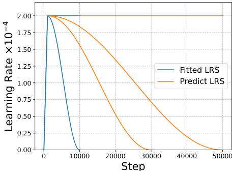

Learning Dynamics in Continual Pre-Training for Large Language Models
None
Abstract
この論文の核心を一言で言うと…
大規模言語モデルの継続的事前学習（CPT）における「学習のクセ」を解き明かし、それを予測・制御するための新しい法則「CPTスケーリング則」を提案します！これにより、モデルの性能をより賢く、効率的に調整できるようになります。
このアブストラクトでは、論文の主要な目的、手法、発見、そしてその意義について概説します。情報系の大学院1年生の皆さんが、この分野の雰囲気を掴めるように、専門用語も丁寧に解説していきますね。
CPTとは？そして本研究の挑戦
継続的事前学習（Continual Pre-Training, CPT）は、強力な基盤モデル（Foundation Models）を、特定の下流タスク（Downstream Tasks）、例えば医療、法律、金融といった専門分野向けに効率よく適応させるための人気の技術です。
基盤モデル (Foundation Models)
非常に大規模なデータセットで訓練された、汎用的なAIモデルのこと。これ自体でも様々なタスクをこなせますが、特定のタスクに特化させることでさらに性能が向上します。例：GPT-3, BERTなど。
下流タスク (Downstream Tasks)
基盤モデルを特定の応用目的（例：質問応答、文章生成、翻訳、専門分野の知識活用など）に合わせてファインチューニング（微調整）した後のタスクのことです。
この研究では、大規模言語モデル（Large Language Models, LLM）のCPTプロセス全体を通して、学習ダイナミクス（Learning Dynamics）、つまりモデルがどのように学習していくのか、その振る舞いを詳細に探ります。
大規模言語モデル (LLM)
大量のテキストデータで訓練された自然言語処理モデル。人間のように自然な文章を生成したり、理解したりする能力を持ちます。例：ChatGPTの基盤技術など。
学習ダイナミクス (Learning Dynamics)
モデルが訓練データから学習する過程での、性能や内部状態の時間的な変化や振る舞いのこと。学習が順調に進んでいるか、停滞しているか、振動しているかなどを分析します。
研究の焦点と重要な観察
特に注目するのは、一般的な知識を扱う一般ドメイン（General Domain）の性能と、特定の専門分野を扱う下流ドメイン（Downstream Domain）の性能が、CPTの各訓練ステップでどのように変化していくかです。ドメイン性能は、検証損失（Validation Losses）という指標で測定します。
検証損失 (Validation Loss) とは？
モデルの性能を評価するための指標の一つ。訓練データとは別の「検証データ」を使って計算され、モデルが未知のデータに対してどれだけ上手く予測できるか（汎化性能）を示します。損失が低いほど、モデルの性能が良いとされます。
私たちの観察によると、CPTにおける損失曲線の変化は、実は「ある既存の損失曲線から、別の（目には見えない）隠れた損失曲線へと移行していくプロセス」として捉えることができます。この複雑な動きは、以下の2つの主要な効果を切り離して考えることで説明できることが分かりました。
分布シフト (Distribution Shift)
元の一般データと新しい専門データの性質（分布）が異なることによる影響。
学習率アニーリング (Learning Rate Annealing)
学習の進行に合わせて学習率（モデルが一度に学習する量）を徐々に小さくしていく手法による影響。
これらの要素が、CPT中のモデルの振る舞いを理解する鍵となります！
提案：CPTスケーリング則
本研究では、上記の分布シフトと学習率アニーリングという2つの要因を組み合わせた新しいCPTスケーリング則（CPT Scaling Law）を導き出しました。
CPTスケーリング則とは？
CPTプロセスにおけるモデルの損失を、訓練の任意のステップや、さまざまな学習率スケジュール（Learning Rate Schedules, LRS）のもとで予測可能にする数理的な法則です。
学習率スケジュール (LRS)
訓練中に学習率をどのように変化させるかの計画のこと。例えば、最初は大きな学習率で素早く学習し、徐々に学習率を小さくして安定させる、といった戦略があります（例：定数、ステップ減衰、コサインアニーリングなど）。
この法則がもたらす理解と応用
私たちの提案するCPTスケーリング則によって、CPTにおけるいくつかの重要な要素について、より包括的な理解が得られます。例えば…
- 損失ポテンシャル（Loss Potential）: 学習率アニーリングによって、将来的にどれだけ損失が減少しうるかの可能性。
- ピーク学習率（Peak Learning Rate）: 学習率スケジュールの最大値。
- 訓練ステップ（Training Steps）: モデルを訓練する回数。
- リプレイ比率（Replay Ratio）: CPT中に、過去の一般ドメインのデータをどの程度の割合で混ぜて学習させるか。
さらに、このアプローチは非常に実用的です。例えば、一般ドメインの性能と専門ドメインの性能のバランスを取るなど、様々なCPTの目標に応じて、これらの訓練ハイパーパラメータをカスタマイズするのに役立ちます。
一般性能 vs ドメイン特化性能... 最適なバランスを見つけよう！
実験による実証
広範囲な実験を通じて、私たちが提案するスケーリング則が、様々なCPT用データセットや訓練ハイパーパラメータの設定においても有効であることを示しました。これは、この法則の一般性と実用性を示唆しています。
様々なデータセットで検証 様々なハイパーパラメータで検証
背景と課題：なぜCPTが重要なのか？
LLMは目覚ましい能力を持っていますが、特定の専門分野（例：コーディング 、金融 、数学 など）でさらに能力を発揮させるためには、追加の学習が必要です。しかし、巨大なLLMを一から再訓練するのは非常にコストがかかります 。
CPTは、この再訓練コストを大幅に削減しつつ、特定のドメイン知識を効率的にモデルに教え込む手法として注目されています (Chen et al., 2023a; C¸ag˘atay Yıldız et al., 2024; Ibrahim et al., 2024)。
CPTの主な関心事は、一般ドメインの知識を維持しながら、新しい専門ドメインの性能をいかに向上させるか、という点にあります。しかし、よく知られている課題として「破滅的忘却（Catastrophic Forgetting）」があります。
破滅的忘却 (Catastrophic Forgetting)
新しいタスクやデータを学習した際に、以前に学習したタスクやデータの知識を急激に忘れてしまう現象のこと。人間の学習ではあまり見られませんが、ニューラルネットワークでは頻繁に起こりうる問題です (French, 1999; Gupta et al., 2023)。CPTではこの問題をどう軽減するかが重要です。
関連するこれまでの研究
近年、継続的事前学習の文脈で、データの転移に関するいくつかのスケーリング則が提案されています。これらは、モデルのサイズやデータ量が性能にどう影響するかを数式で表そうとする試みです。
Hernandez et al. (2021b), Barnett (2024)
ファインチューニングするデータセットのサイズやモデルのサイズに応じて、どれだけ効果的にデータ（知識）が転移されるかを記述する法則を発見しました。
Que et al. (2024), Gu et al. (2024)
一般ドメインの性能と専門ドメインの性能のバランスを取るために、最適なリプレイ比率（過去のデータをどの程度混ぜるか）を見つけるための法則を提案しました。
本研究が解き明かしたい疑問 (Research Questions)
しかし、これまでの研究では、CPTプロセス全体を通じた学習ダイナミクス、特に一般ドメインと専門ドメインの性能がどのように変動するかを定量的に記述しようとする試みはほとんどありませんでした。そこで、私たちは以下の2つの主要なリサーチクエスチョン（RQ）を設定しました。
RQ1: 包括的な法則の発見
最終的なCPT性能に影響を与えるできるだけ多くの変数（学習率、データ量、モデル特性など）を含み、かつ正確なCPTの法則を見つけ出すことができるか？
意義: この問いを探求することで、研究者はCPT性能に影響する様々な要因を明確に理解し、予測に基づいてハイパーパラメータを最適化できるようになります。
RQ2: 学習過程の追跡
過去の研究のように最終的な性能だけでなく、CPTプロセスの各ステップにおけるLLMの性能を追跡し、理解することができるか？
意義: この問いに答えることで、LLMがCPTの各段階でどのように学習を進めているのか、そのダイナミクスを深く理解できます。これは、今後のCPT研究にとって重要な理論的指針や新たな洞察をもたらします。
このAbstractを通じて、本研究の輪郭を掴んでいただけたでしょうか。詳細は本文で！
1. Introduction
🚀 このセクションのゴール 🚀
この「はじめに」のセクションでは、大規模言語モデル (LLM) の世界でますます重要になっている継続的事前学習 (Continual Pre-Training, CPT) の学習ダイナミクス、つまり「学習がどのように進んでいくか」の謎に迫ります。特に、CPTを行うと一般的な知識や能力と、特定の専門分野の知識や能力がどう変化するのか？そのメカニズムを解き明かそうとしています。著者たちは、CPT中のモデルの性能変化（損失カーブ）が、実は「データの性質の違い（分布シフト）」と「学習の進め方（学習率アニーリング）」という2つの大きな要因で説明できることを突き止めました。そして、これらを数式で表現した新しい「CPTスケーリング則」を提案しています。この法則を使えば、CPTでモデルがどう賢くなっていくかを予測したり、学習方法を最適化したりできるかもしれない、というワクワクする内容です！
LLMの進化と継続的事前学習 (CPT) の登場
ここ数年で、大規模言語モデル (LLMs) は目覚ましい進化を遂げ、文章を作ったり、質問に答えたり、翻訳したりと、まるで人間のように言葉を操る能力で、学術界だけでなく産業界からも熱い視線を集めています (Dubey et al., 2024; OpenAI, 2023)。
大規模言語モデル (LLMs) とは、大量のテキストデータで学習された、非常に大きなニューラルネットワークモデルのことです。GPT-3やBERTなどが有名ですね。人間が書いたような自然な文章を生成したり、質問応答、翻訳、要約など、様々な言語タスクで高い性能を発揮します。
そんなLLMを、特定の専門分野（例えば、プログラミング、金融、数学など）でさらにパワーアップさせたい！でも、毎回ゼロから巨大なモデルを学習し直すのは、時間もお金もかかって大変… 😥
そこで登場したのが 継続的事前学習 (Continual Pre-Training, CPT) という技術です。
継続的事前学習 (CPT) とは、既に大規模な汎用データで事前学習されたLLMを、特定の専門分野のデータを使って追加学習（ファインチューニングに近いですが、ここでは事前学習の延長線上にあるという意味合いが強いです）することで、その分野での能力を向上させる手法です。これにより、ゼロからの再学習に伴う莫大なコストを削減しつつ、特定のタスクに特化したLLMを効率的に開発できます (Chen et al., 2023a; C¸ ag˘ atay Yıldız et al., 2024; Ibrahim et al., 2024)。
汎用LLM
専門分野データ
専門LLM (CPT後)
図：CPTの概念図
CPT中の性能変化の追跡
これまでの研究 (Gupta et al., 2023; Ibrahim et al., 2024; Que et al., 2024) に倣い、この論文ではCPTプロセス中のモデルの性能変化を、それぞれのドメイン（汎用ドメインと専門ドメイン）に対応する検証損失 (validation loss) を使って追跡します。
検証損失 (Validation Loss) とは、機械学習モデルの学習中に、学習データとは別の「検証データ」を使って計算される損失（誤差）のことです。学習データに対する損失が下がっていても、検証データに対する損失が上がってしまう場合、モデルが学習データに過剰適合（過学習）している可能性があります。検証損失は、モデルの汎化性能、つまり未知のデータに対する性能を測る重要な指標となります。
検証データ (モデルが見ないデータ) 性能評価 (検証損失)
図：検証損失の役割
著者たちは、CPT中の損失カーブ（学習ステップごとの損失の変化を示すグラフ）が、実はある種の「転移カーブ (transfer curve)」であることを見出しました。そして、このカーブは、「分布シフト (distribution shift)」と「学習率アニーリング (LR annealing)」という2つの効果を切り離して考えることで説明できると主張しています。
分布シフト (Distribution Shift)
元の学習データ（事前学習データ、PTデータ）と新しい学習データ（CPTデータ）の性質がどれだけ違うか、ということです。例えば、一般的なニュース記事で学習したモデルを、法律の専門文書でCPTする場合、データの言葉遣いやトピックが大きく異なるため、分布シフトは大きいと言えます。分布シフトが大きいほど、転移損失カーブのずれも顕著になります。
データの性質の違いが大きいほど、分布シフトも大きい
学習率アニーリング (LR Annealing)
学習率を学習の進行とともに徐々に小さくしていくテクニックのことです。最初は大きな学習率で大まかに学習し、徐々に学習率を小さくすることで、より細かく最適な解に近づこうとします。この学習率アニーリングは、事前学習 (PT) 段階とCPT段階の両方で、局所的な損失の低下（つまり性能向上）をもたらします。
学習率を徐々に下げることで安定した学習を目指す
これらの予備的な観察と実験的検証を通じて、著者たちはこれら2つの要因を統合したCPTスケーリング則 (CPT scaling law) を発見しました。この法則を使うと、実際の損失変化をうまく再現したり、予測したりすることが可能になります。
CPTの損失カーブ = 分布シフトの影響 + 学習率アニーリングの影響
\( L_{CPT}(t) \) ≈ \( f(\text{Distribution Shift}) \) + \( g(\text{LR Annealing}) \)
※ これは概念的な表現であり、実際の数式はもっと複雑です。

この図は、CPTプロセス中の検証損失の変化を示しています。いくつかの重要なポイントがあります。
- (a) 定数学習率の場合の理想的な曲線: もし学習率がずっと一定で、データの分布も変わらなかったらどうなるか、という理論上の線です。
- 青線 (Pre-Training with Dpt): 汎用データ($D_{pt}$)だけで学習し続けた場合の理想的な損失。
- オレンジ線 (Pre-Training with Dcpt): 専門データ($D_{cpt}$)だけで学習し続けた場合の理想的な損失（ただし、実際にはCPT開始時点からの学習）。
- 緑線 (Continual Pre-Training): 実際に汎用データで事前学習後、専門データでCPTを行った場合の損失。これが本論文の分析対象です。
- Transfer Point: CPTを開始する時点。
- Distribution Shift: 青線と緑線の間の差が、データ分布の違いによる影響を表します。
- (b) $D_{pt}$ (FineWeb) 検証損失: 汎用データ (FineWebというデータセット) に対する実際の検証損失。CPTを開始すると、専門データに特化していくため、汎用データに対する性能は少し悪化する（損失が上がる）傾向が見られます。
- (c) $D_{cpt}$ (Knowledge Pile) 検証損失: 専門データ (Knowledge Pileというデータセット) に対する実際の検証損失。CPTを開始すると、専門データに適合していくため、性能が向上する（損失が下がる）傾向が見られます。
- (d), (e), (f) は学習率スケジュールがWSD (Warmup-Stable-Decay) の場合: こちらは学習率を途中で変化させる現実的な設定です。(a)-(c) と同様の傾向が見られますが、学習率の変化によって損失カーブがより複雑な形になっています。特に、学習率を上げるウォームアップ期間や、下げる減衰期間で損失が大きく動くことが分かります。
注目ポイント: CPTの損失カーブ（緑線）は、「汎用データでの学習を続けた場合の理想的な線（青線）」から徐々に離れていき、「専門データだけで学習した場合の理想的な線（オレンジ線）」に近づいていく、というダイナミックな動きをしています。これが「転移カーブ」と呼ばれる所以です。また、学習率の変化（(d)-(f)の山や谷）も損失に大きな影響を与えています。
提案するCPTスケーリング則の意義
著者たちが提案するCPTスケーリング則は、CPTの学習ダイナミクスにおける重要な変数について、包括的なモデル化と理解を提供します。具体的には、以下のような要素です。
損失ポテンシャル (Loss potential)
学習率アニーリングによって将来的にどれだけ損失を下げられるかの潜在的な可能性。詳細は後述。
ピーク学習率 (Peak LR)
学習中に設定される最大の学習率。
学習ステップ数 (Training steps)
モデルをどれくらいの回数更新するか。
リプレイ比率 (Replay ratio)
CPT中に、元の事前学習データをどれくらいの割合で混ぜて学習させるか。
損失ポテンシャルとは、学習率アニーリング（学習率を徐々に下げること）によって、将来的に損失がどれだけ低下する可能性があるかを示す指標です。まだ学習率が高い状態（＝アニーリングがあまり進んでいない状態）のモデルは、これから学習率を下げることでさらに損失を大きく下げられる「伸びしろ」があると考えられ、これを「損失ポテンシャルが高い」と表現します。この概念は、CPTにおいて、どの程度の事前学習済みモデルを使うべきかを考える上で重要になります。
大幅な損失低下の余地あり
損失低下の余地は小さい
さらに、このスケーリング則は、これらの要因がCPTの各ステップで最終的なモデルの性能にどのように複合的に影響するかを示し、これらの要因を調整することでモデルを最適化する方法の指針を与えます。
スケーリング則の導出と応用から見えてきた重要な結論
-
発見1 ✏️ 損失ポテンシャルが高い事前学習済みモデルほど、下流の専門ドメインにより良く適応できる。
PTモデル (高ポテンシャル) 下流ドメインへの高い適応力
-
発見2 📝 もしCPTの学習時間（turning length, 後で説明されます）が無限に長くなった場合、汎用ドメインの性能は必然的に低下する。これは、汎用の事前学習が十分すぎるか、あるいは汎用ドメインと専門ドメインの間の分布シフトが非常に大きいことを意味する。
CPT学習時間 → ∞ 汎用ドメイン性能 ↓
-
発見3 📊 基本的に、特定の目標（例えば、汎用性能と専門性能のバランス）に向けて、このスケーリング則は、事前学習済みモデルの最適な損失ポテンシャル、ピーク学習率、事前学習データセットのリプレイ比率など、最適な学習ハイパーパラメータを予測することができる。
特定の目標 最適なハイパーパラメータ予測
2. Pilot Observation
このセクションでは、大規模言語モデル（LLM）の継続的事前学習（Continual Pre-Training, CPT）プロセスにおいて、モデルの性能がどのように変化していくか、そのダイナミクスを予備的に観察します。
主な目的は以下の2点です：
- CPT中に、汎用ドメイン（例：一般的なウェブテキスト）と下流ドメイン（例：特定の専門分野のテキスト）それぞれにおけるモデルの性能が、学習ステップごとにどのように進化するかを調査する。
- 特に、CPTにおける検証損失曲線の振る舞いに注目し、それがどのような要因によって変動するのかを探る。
この観察を通じて、論文の中心的な主張である「CPT損失曲線は、ある隠れた事前学習曲線から別の隠れた事前学習曲線への遷移として理解でき、この遷移は分布シフトと学習率アニーリングという2つの効果に分解して記述できる」という仮説の根拠を示します。最終的には、これらの知見を基に、CPTの性能を予測するための新しいスケーリング則を導出することを目指します。
2.1. Task Formulation
まず、CPTプロセスにおける性能評価の枠組みを定義します。
基本方針
CPTプロセスを通じて、汎用ドメインと下流ドメインの両方における性能のダイナミクスを調査します。過去の研究（Ibrahim et al., 2024; Que et al., 2024; Gu et al., 2024; Hernandez et al., 2021a）に倣い、モデルの性能は対応する検証損失（validation loss）を調べることで評価します。したがって、分析の焦点は、事前学習（PT）用と継続的事前学習（CPT）用の両方の検証データセットにおける損失曲線となります。
事前学習データセット (PT Dataset)
これを \( D_{pt} \) と表記します。これは一般的な広範囲のテキストデータを含みます。
汎用ドメイン
継続的事前学習データセット (CPT Dataset)
これを \( D_{cpt} \) と表記します。これは特定の専門分野やタスクに関連するテキストデータを含みます。
下流ドメイン
これらのデータセットに対するモデルの損失を追跡します
Experiment Setup (実験設定)
主要な実験では、以下の設定を使用します：
- モデル LLaMAアーキテクチャに類似したモデルを使用。非埋め込みパラメータ数は1億600万～17億の範囲。
非埋め込みパラメータ: トークンの埋め込み層以外の、モデル本体の計算に関わるパラメータのこと。
- 初期事前学習データ汎用データセットとして FineWeb (Penedo et al., 2024) を使用してLLMを初期事前学習します。
- CPTデータドメイン特化データセットとして Knowledge-Pile (Fei et al., 2024) を使用してCPTを行います。
- 学習率スケジュール (LRS) 事前学習（PT）および継続的事前学習（CPT）のモデル学習には、様々な学習率スケジュール（LRS）を活用します。これについては図1で示されています（ただし、図1の画像は提供されていません。後述の解説を参照してください）。
詳細な実験設定は付録Bに記載されています。
Observation (観察結果)
過去の研究（Ibrahim et al., 2024; Gupta et al., 2023）でも観察されているように、CPTプロセス中には以下の傾向が見られます：
\(D_{pt}\) 検証損失
汎用ドメインデータセット（\(D_{pt}\)）に対する検証損失は増加する傾向があります。これは、モデルが新しいドメイン（\(D_{cpt}\)）に適応する過程で、元の汎用的な知識の一部を「忘れてしまう」現象（破滅的忘却）を示唆しています。
\(D_{cpt}\) 検証損失
一方、CPTドメインデータセット（\(D_{cpt}\)）に対する検証損失は減少する傾向があります。これは、モデルがターゲットドメインの知識を学習し、適応していることを示しています。
さらに、PTフェーズとCPTフェーズの両方を通じて、損失曲線は学習率アニーリング（LR annealing）によって大きく影響を受け、損失が急速に低下する様子が観察されます。
学習率アニーリングとは？
学習率アニーリングは、学習の進行とともに学習率を徐々に小さくしていく手法です。学習初期には大きな学習率で大域的な最適解の近くに素早く移動し、学習終盤には小さな学習率で局所的な最適解に細かく収束させることを目的とします。これにより、学習の安定化と性能向上が期待できます。
2.2. CPT Transfer Loss Curve
CPT損失曲線のダイナミクスをより深く理解するために、研究者たちは実際のCPT損失曲線に加えて、さらに2種類の「隠れた」事前学習曲線（hidden pre-training curve）を訓練し、比較分析しています。これらの曲線は、CPTプロセスがどのような学習経路を辿っているのかを明らかにするための重要な手がかりとなります。
Hidden PT Curve Training on \(D_{pt}\)
この曲線は、モデルが継続的に \(D_{pt}\)（汎用データセット）のみを使って事前学習された場合の損失を示します。ここでの重要なポイントは、学習率スケジュール（LRS）などの訓練設定が、実際のCPTフェーズと同じであるという点です。
つまり、「もしCPTを行わずに、そのまま汎用データで学習を続けたらどうなるか？」というシナリオの損失曲線です。
Hidden PT Curve Training on \(D_{cpt}\)
この曲線は、モデルが最初から \(D_{cpt}\)（ドメイン特化データセット）のみを使って訓練された場合の損失を示します。ここでも、学習率（LR）などの訓練設定は、完全なPTフェーズとCPTフェーズの両方で適用されるものと同じであるという点が重要です。
つまり、「もし最初からドメイン特化データだけで学習していたら、どのような損失曲線になったか？」というシナリオの損失曲線です。これは、ドメイン特化学習の理想的な到達点の一つと考えることができます。
Transfer Loss Curve (遷移損失曲線)
図1（論文中の図）に示されるように、実際のCPT損失曲線は、\(D_{pt}\) と \(D_{cpt}\) の両方の検証セットにおいて遷移的な曲線として振る舞います。この曲線は、「\(D_{pt}\) で学習し続けた場合の隠れたPT曲線」から逸脱し、もう一方の「\(D_{cpt}\) で最初から学習した場合の隠れたPT曲線」に近づいていくように見えます。

図1: \(D_{pt}\) および \(D_{cpt}\) 検証損失のシフト。 (a) は FineWeb (\(D_{pt}\)) の検証損失、(b) は Knowledge Pile (\(D_{cpt}\)) の検証損失の推移を示しています。
図1の見方:
- (a) \(D_{pt}\) (FineWeb) 検証損失のシフト:
- 横軸はCPTのステップ数（時間経過）、縦軸は\(D_{pt}\)データセットに対する検証損失です。
- CPTを開始すると（グラフの"Pre-training"から"CPT in 120K Steps"へ移行する部分）、汎用ドメインの損失（\(D_{pt}\) Validation Loss）が初期には上昇していることが見て取れます。これは、モデルが新しいドメイン（\(D_{cpt}\)）に特化し始めることで、元の汎用的な知識が若干失われることを示しています（破滅的忘却の兆候）。
- グラフ中の数式（例: \(Power: R^2 = ...\)）は、この損失曲線を特定の関数でフィッティングしようとした結果を示しています。
- Distribution Shiftというラベルは、この汎用ドメイン損失の上昇が、データ分布の変化（汎用データからドメイン特化データへの移行）によって引き起こされることを示唆しています。
- (b) \(D_{cpt}\) (Knowledge Pile) 検証損失のシフト:
- 横軸は同様にCPTのステップ数、縦軸は\(D_{cpt}\)データセットに対する検証損失です。
- CPTを開始すると、ドメイン特化データセットの損失（\(D_{cpt}\) Validation Loss）は明確に減少しています。これは、モデルがターゲットドメインの知識を効果的に学習し、そのドメインへの適応が進んでいることを示しています。
- こちらも、数式によるフィッティング結果や Distribution Shift のラベルが見られます。\(D_{cpt}\)におけるDistribution Shiftは、モデルが新しい分布（\(D_{cpt}\)）に適応していく過程そのものを指していると考えられます。
分布シフト (Distribution Shift)
実際の（遷移）損失曲線と、「\(D_{pt}\)で学習し続けた場合の隠れたPT曲線」との間の不一致・隔たりを分布シフトと呼びます。これは、学習データが \(D_{pt}\) から \(D_{cpt}\) へと変わることによる影響を定量的に示したものと言えます。
実際のCPT損失曲線
(青い実線)
≠
隠れたPT曲線 (on \(D_{pt}\))
(灰色の破線)
→
分布シフト
CPTのステップ数が無限に近づくにつれて（つまり、CPTを非常に長時間続けると）、この遷移損失曲線は「\(D_{cpt}\)で最初から学習した場合の隠れたPT曲線」に収束すると予想されます。
Finding 1 (発見1)
CPTのプロセスは、損失曲線が「\(D_{pt}\)で学習し続けた場合の隠れたPT曲線」から「\(D_{cpt}\)で最初から学習した場合の隠れたPT曲線」へと遷移する過程である。
この遷移が CPTの本質 と言えます。
3. Continual Learning Dynamics Law
このセクションでは、大規模言語モデルの継続的事前学習（Continual Pre-Training, CPT）における転移曲線（transfer curve）を定量的に分析します。特に、分布シフト（distribution shift）と学習率アニーリング（learning rate annealing）という2つの重要な要素を考慮に入れます。
主なアイデアは以下の通りです：
- データ転移がなければ、CPTの損失曲線は、元の事前学習データセット（$D_{pt}$）で学習を続けた場合の隠れた事前学習曲線（hidden Pre-Training curve）の軌跡を辿るはずです。
- 実際のCPTでは、新しいドメインのデータセット（$D_{cpt}$）へ移行するため、この隠れた曲線から逸脱が生じます。この逸脱が分布シフトとして記述されます。
つまり、隠れたPT曲線がPTモデルの状態を反映し、分布シフト項がデータ分布間の相対的な関係性（転移の度合い）を記述すると考えられます。これらの要素を組み合わせることで、CPTプロセス中の損失変動を予測する法則（スケーリング則）を導出することを目指します。
3.1. Hidden Pre-Training Curve Training on $D _ { p t }$
まず、データ転移が発生しない理想的な状況を考えます。このとき、CPTプロセスは実質的に元の事前学習データセット $D_{pt}$ での学習継続と同じです。このような状況での損失の振る舞いを記述するために、Tissue et al. (2024) が導入した学習率アニーリングを考慮したスケーリング則を用います。
学習ステップ $t$ における損失 $L(t)$ は、以下の式で表されます：
ここで、各項は以下を意味します：
- $L(t)$: ステップ $t$ での損失値。
- $L_0$: 学習が進んだ後に到達可能な最小の損失値（ベースライン）。正の定数。
- $A$: 損失の減少スケールを調整する正の定数パラメータ。
- $S_1$: 順方向領域 (forward area)。学習率 $\eta_i$ の累積和です。
$$ S_1 = \sum_{i=1}^{t} \eta_i $$
📝 これは、学習がどれだけ進んだかを示す指標です。学習率が高いほど、またステップ数が多いほど大きな値を持ちます。
- $\alpha$: 順方向領域 $S_1$ が損失に与える影響の度合い（べき乗）を調整する正の定数パラメータ。
- $C$: 学習率アニーリングによる損失減少効果の大きさを調整する正の定数パラメータ。
- $S_2$: アニーリング領域 (annealing area)。学習率のアニーリング（徐々に減少させること）による影響を捉える項です。
$$ S_2 = \sum_{i=1}^{t} \sum_{k=1}^{i} (\eta_{k-1} - \eta_k) \cdot \lambda^{i-k} $$
📝 学習率が減少する $(\eta_{k-1} - \eta_k > 0)$ と、この項が大きくなり、損失 $L(t)$ を引き下げる効果があります。$\lambda$ は過去の学習率変化が現在の損失にどれだけ影響を与えるか（モメンタムのような効果）を調整するハイパーパラメータ（通常 $0 < \lambda \le 1$）です。
- $\lambda$: モメンタム項を記述するハイパーパラメータ。
CPTプロセスにおいて、分布シフトがない場合のベースとなる損失 $L_{base}(t)$ は、このスケーリング則に従うと考えられます。PT（事前学習）段階とCPT（継続的事前学習）段階の両方を考慮して、以下のように記述されます。
ここで、
- $S_1^{pt}$ と $S_2^{pt}$: PT段階での順方向領域とアニーリング領域。
- $S_1^{cpt}$ と $S_2^{cpt}$: CPT段階での順方向領域とアニーリング領域。
- $t$: CPTの学習ステップ数。
$L_{base}(t)$ は、CPTがPTからシームレスに同じデータ分布 ($D_{pt}$) で学習を継続した場合の理論的な損失曲線を表します。これが、実際のCPT損失曲線を評価する際の基準線となります。
3.2. Distribution Shift Term
次に、CPTプロセスで実際に観測される損失曲線が、$D_{pt}$ 上での隠れたPT曲線からどれだけ逸脱するかを記述する分布シフト項 ($\Delta L(t)$) について考えます。このシフトは、$D_{pt}$ と $D_{cpt}$ という2つのデータセット間の分布の隔たり (distribution distance) を反映します。また、多くの研究で指摘されているように、CPT段階での学習率スケジュール（LRS）もこのシフトに大きな影響を与えます。
ステップ1 定数学習率（Constant LRS）での分析
まず、LRSの影響を切り分けるために、PTとCPTの両フェーズで同じ一定の学習率を使用した場合を分析します。この条件下で、異なる転移開始点（つまり、PTモデルの異なるチェックポイントからCPTを開始する）で実験を行いました。
論文のFigure 2（本解説では図は省略）で示されているように、これらの分布シフト項は、転移開始点によらずほぼ重なる傾向が見られました。これは非常に重要な知見で、分布シフト項が転移開始点やPTモデルの特定の状態（チェックポイント）には依存しないことを示唆しています。
発見: 分布シフト項は、PTモデルの状態から独立しているようです。
分布シフト項 $\Delta L(t)$ の関数形として、指数関数とべき乗則の形を比較検討した結果、以下のべき乗則の修正形が最もよくフィットすることがわかりました：
ここで、
- $B$: シフトの最大量（飽和値）を決定する正の定数。
- $E$: シフトが飽和する速さを調整する正の定数。
- $t$: CPTの学習ステップ数。
- $\beta$: シフト曲線の形状を決定する正の定数（べき指数）。
単純なべき乗則 $B \cdot t^{-\beta}$ だと、$t=0$（CPT開始直後）で $\Delta L(0)$ が発散するか、定義できません。しかし、CPT開始時点ではまだ分布シフトは起きていないはずなので、$\Delta L(0) = 0$ となる必要があります。上記の式形 $(E \cdot t + 1)^{-\beta}$ は、この条件を満たします。
この式を用いて、$D_{pt}$ と $D_{cpt}$ の両方の検証セットにおける転移損失曲線をフィッティングした結果が、論文のFigure 2に示されています。
ステップ2 他の学習率スケジュール（Other LRS）への拡張
一定学習率以外の場合、学習率そのものではなく、順方向領域 $S_1$ が分布シフト項に影響を与えると考えられます。CPTにおける順方向領域 $S_1^{cpt}$ が小さい場合（例えば、学習率が低い、または学習ステップが短い場合）、分布シフトの度合いも小さくなります。これは論文のFigure 1でオレンジ色の転移曲線が異なる様子として示唆されています。
そこで、Tissue et al. (2024) のアプローチに従い、分布シフト項の式中の学習ステップ $t$ を、CPTにおける順方向領域 $S_1^{cpt}$ で置き換えます。
ここで、$S_1^{cpt}$ はCPT段階での順方向領域（学習率の累積和）です。これにより、様々なLRSに対応できる一般化された分布シフト項の表現が得られます。
💡 この置き換えにより、学習ステップ数だけでなく、学習率の大きさやスケジュールの影響も分布シフト項に組み込むことができます。
3.3. Final Transfer Curve
いよいよ、$D_{pt}$ 上での隠れたPT曲線（式2の $L_{base}(t)$）と分布シフト項（式3の $\Delta L(t)$）を組み合わせることで、CPT転移損失曲全体を記述する完全な定式化を行います。
学習ステップ $t$ におけるCPTの損失 $L(t)$ は、以下のように表されます。
アニーリング領域 $S_2^{pt}$ と $S_2^{cpt}$ にかかる係数が、$C_1$ と $C_2$ のように異なっています。これは、PT段階とCPT段階で学習データセットが異なるため、学習率アニーリングによる損失減少効果の大きさが変わることを考慮しています。
この損失曲線関数（式4）は、PT段階とCPT段階の両方で、任意の学習率スケジュール（LRS）における任意のステップでの損失を記述できると主張されています。
実験による検証：
論文では、広く採用されているWSD（Warmup-Stable-Decay）LRSとCosine LRSを用いてモデルを事前学習および継続的事前学習し、式4を用いて $D_{pt}$ および $D_{cpt}$ 検証セットの全損失曲線をフィッティングしています。結果は論文のFigure 3に示されています。
図3のイメージ (WSD PT and CPT LRS (a-c), Cosine PT and CPT LRS (d-f))
Figure 3 (a) と (d) はそれぞれWSDとCosineの学習率スケジュールを示しています。(b) と (e) は $D_{pt}$ (FineWeb) の検証損失、(c) と (f) は $D_{cpt}$ (Knowledge Pile) の検証損失を示しています。実線が実際の損失（Truth Loss）、破線が式4でフィッティングした損失（Fitted Loss）です。
Figure 3 の解釈:
図の中央（(b), (e)）と右側（(c), (f)）のパネルを見ると、提案された式（式4）が、異なるLRS（WSDとCosine）において、学習プロセス全体を通じた損失変動のトレンドをうまく捉えていることがわかります。
- 例えば、図3(b)では、$D_{pt}$ の損失がCPT開始後に上昇し、その後LRSに応じて変動する様子がフィッティングされています。
- 図3(c)では、$D_{cpt}$ の損失がCPT開始後に急激に減少し、その後LRSに応じて安定していく様子がフィッティングされています。特に「Peak Point」や「Distribution Shift + LR Re-Warmup」といったラベルは、損失曲線の特徴的な部分を示しています。
さらに、このフィッティングされた式を用いて、他のLRSでの損失曲線を予測することも可能であると述べられており、その結果は論文のFigure 10（付録）に示されています。また、CPT段階でバッチサイズやシーケンス長が変更される場合でも、このスケーリング則は適応可能であると主張されており、詳細は付録Fで示されています。
CPT損失曲線は、以下の2つの要素に分解できます：
- $D_{pt}$ での隠れたPT曲線: これは学習率アニーリングを伴う単純なスケーリング則として定式化されます。
- 分布シフト項: これは転移開始点に依存せず、べき乗則に従う遷移を示します。
転移損失表面（Transfer Loss Surface）
この定式化をより深く理解するために、LLMの損失表面を「転移スライド」として視覚化しています（論文のFigure 4）。
Figure 4. CPTプロセスの損失表面と2つの方向からの眺め。
Figure 4 の解釈:
(a) はCPTプロセスの損失表面を3次元的に示しています。「Forward Area Direction」と「Annealing Area Direction」が損失表面の形状を決定する2つの主要な軸です。CPTプロセスは、一つの「スライド」（$D_{pt}$ に対応する損失表面）から別の「スライド」（$D_{cpt}$ に対応する損失表面）へ、べき乗則の形で移行すると表現されています。
- データセット間の距離と勾配: 2つのデータセット間の分布の距離が大きい場合、転移表面の「勾配」は急になります。これにより、$D_{pt}$ の損失は急速に上昇します（忘却が起こりやすくなる）。
- 学習率アニーリングと振動: 学習率がアニーリングされると、損失表面上の損失の「振動」の振幅が小さくなり、結果として損失が減少します。
(b) は「Forward view」（順方向領域の方向から見た図）で、損失が初期に減少し、CPT開始点からジャンプして再び変化する様子を示しています。
(c) は「Annealing view」（アニーリング領域の方向から見た図）で、U字型の曲線上で損失が振動しながら減少していく様子を示しています。この図で「Loss Potential」（損失ポテンシャル）という概念が導入されています。
アニーリングの観点から、ある点の「高さ」を損失ポテンシャル (loss potential) と名付けています。これは、学習率アニーリングを通じて将来的に損失がどれだけ低下するかの可能性を捉えるものです。定量的に、損失ポテンシャルは、PTアニーリングフェーズの最終学習率と、事前学習フェーズの初期または最大学習率の比として定義されます。
🎯 具体例: 損失ポテンシャル
例えば、事前学習の初期学習率が 0.001 で、PTアニーリングフェーズの最終学習率が 0.0001 だった場合、損失ポテンシャルは $0.0001 / 0.001 = 0.1$ (または 10%) となります。
もし最終学習率が 0.0005 なら、損失ポテンシャルは $0.0005 / 0.001 = 0.5$ (または 50%) となります。損失ポテンシャルが高いということは、アニーリングによる「伸びしろ」が大きいことを意味します。
より高い損失ポテンシャルを持つPTモデルは、常により低い $D_{cpt}$ 検証損失を達成します。したがって、オープンソースモデルをリリースする際には、下流ドメインへの適応性を高めるために、高い損失ポテンシャルを持つバージョンをリリースすることが有益であると提唱しています。
3.4. Extension to Model Size and Replay Ratio
このCPTスケーリング則は、さらにモデルサイズとリプレイ比率という2つの重要な要素にも拡張可能です。
モデルサイズ ($N$) への拡張
Tissue et al. (2024) の研究に倣い、モデルサイズ $N$（通常は非埋め込みパラメータ数）をCPTスケーリング則に組み込みます。
異なるモデルサイズにおける分布シフト項を分析した結果、絶対的なシフト値はモデルサイズによらずほぼ同一であることが明らかになりました。この発見は重要で、分布シフトの量はモデルの大きさにあまり影響されないことを示唆しています。
この統合により、提案されたスケーリング則は、すべてのモデルサイズの転移損失曲線を同時にフィッティングできるようになります。詳細は論文の付録Eで示されています。
📊 つまり、モデルが大きくても小さくても、新しいドメインへの適応に伴う「損失の変化量（シフト）」自体はあまり変わらない、ということです。
リプレイ比率への拡張
CPTでは、新しいドメインのデータ ($D_{cpt}$) を学習する際に、元のドメインのデータ ($D_{pt}$) の一部を混ぜて学習するリプレイがよく用いられます。このリプレイの比率もスケーリング則に統合されます。
分析の結果、リプレイ比率は分布シフト項に指数関数的な影響を与えることが観察されました。つまり、リプレイ比率を変えると、分布シフトの大きさが指数関数的に変化するということです。詳細は論文の付録Hで説明されています。
📈 $D_{pt}$ のデータを多くリプレイするほど、分布シフトは小さくなる傾向があると考えられます。
Que et al. (2024) のD-CPT則と比較して、この論文のスケーリング則は、最終的な損失だけでなく、異なるリプレイ比率における学習プロセス全体の損失曲線を予測できる点が優れています。
4. Factor Analyses and Applications
このセクションでは、継続的事前学習（CPT）における重要な要素を掘り下げて分析します。特に、大規模言語モデルの性能に影響を与える主要な要因として、事前学習（PT）モデルの損失ポテンシャル、PTデータセットとCPTデータセット間の分布の距離、ピーク学習率（LR）、そしてCPTのステップ数に焦点を当てます。
これらの要因がCPTの学習ダイナミクスにどのように関わってくるのかを理解するために、以前のセクションで導出した以下のCPTスケーリング則（式4）を活用して、予測および分析を行います。
📝 CPTスケーリング則 (式4)
$$ L(t) = L_{base}(t) + \Delta L(t) $$ $$ = \underbrace{L_0 + A \cdot (S_1^{pt} + S_1^{cpt})^{-\alpha} - C_1 \cdot S_2^{pt} - C_2 \cdot S_2^{cpt}}_{\text{学習率アニーリングを伴うスケーリング則}} + \underbrace{B \cdot (1 - (1 + E \cdot S_1^{cpt})^{-\beta})}_{\text{べき乗則に従う分布シフト}} $$数式の内訳:
- \( L(t) \): CPTのステップ \( t \) における損失。
- \( L_{base}(t) \): 分布シフトがない場合の基本となる損失。学習率アニーリングの影響をモデル化。
- \( L_0, A, C_1, C_2, \alpha \): 定数パラメータ。
- \( S_1^{pt}, S_1^{cpt} \): PTおよびCPT段階での前方領域（累積学習率）。学習の進行度のようなもの。
- \( S_2^{pt}, S_2^{cpt} \): PTおよびCPT段階でのアニーリング領域。学習率の減少具合による効果。
- \( \Delta L(t) \): 分布シフトによる損失の変化。
- \( B, E, \beta \): 定数パラメータ。
- この項は、PTデータセットからCPTデータセットへのデータの性質の変化による影響を表します。
この数式は、CPTプロセス中の損失曲線を、学習率スケジュールの影響とデータ分布の変化の影響という2つの主要な力に分解して理解することを可能にします。
4.1. Loss Potential (損失ポテンシャル)
多くの事前学習済みモデルは、学習の終盤で学習率を徐々に小さくする（アニーリングする）学習率スケジュール（LRS）を採用し、できるだけ低い損失値を達成しようとします。しかし、下流タスク（特定の専門分野のデータ）に最もよく適応するモデルが、必ずしも学習率を完全に下げ切った（アニーリングし尽くした）モデルであるとは限りません。
損失ポテンシャルとは？
そこで登場するのが損失ポテンシャル (Loss Potential)という概念です。これは、学習率アニーリングを通じて、モデルが将来的にどれだけ損失を低下させられるかの「可能性」や「余地」を指します。 下の図4(c)の「Annealing view」を見てみましょう。グラフの縦軸が損失を示し、U字型のカーブの底が最も低い損失です。学習中のモデルがこのカーブの高い位置にあればあるほど、学習率アニーリングによって底に向かって損失を大きく下げられる余地がある、つまり損失ポテンシャルが高いと言えます。
図4: CPTプロセスの損失表面。(a) $D_{pt}$の損失表面を転移スライドとして図示。(b) 前方視点。(c) アニーリング視点、損失ポテンシャルを示唆。
この損失ポテンシャルの影響を調べるために、2つの異なる戦略で実験を行いました。
1. 再ウォームアップなし (W/o Re-warmup)
この戦略では、CPTのピーク学習率をPTの最終学習率に設定します。つまり、PTで学習率が下がった状態から、そのままの低い学習率でCPTを開始します。 様々な損失ポテンシャルを持つモデル（PTの学習率アニーリングの進捗度が異なるモデル）を用意し、同じデータ量で学習率をゼロまでアニーリングさせながらCPTを行いました。
図5(b)は、CPTステップごとのCPTデータセット ($D_{cpt}$) の検証損失を示しています。
図5(b): 異なる損失ポテンシャルを持つモデルの$D_{cpt}$真の損失 vs CPTステップ (再ウォームアップなし)。
この図から、損失ポテンシャルが高いモデル（PTでのアニーリングが進んでいないモデル）ほど、CPT後の最終的な損失が低くなる傾向が見て取れます。 さらに、私たちの提案する式4を用いて様々なCPTステップにおける最終損失を予測したところ（図5c）、この傾向がCPTステップが進んでも持続することが確認されました。
図5(c): 異なるCPTステップにおける$D_{cpt}$予測損失 vs 損失ポテンシャル (再ウォームアップなし)。図中の赤星 ★ は、各CPTステップ数において最も低い$D_{cpt}$検証損失を達成できるモデルを示します。
なぜ損失ポテンシャルが高いと良いのか？ (再ウォームアップなし)
式4の観点から見ると、損失ポテンシャルが異なるモデル間での主な違いは、PTのアニーリングパラメータ \( C_1 \) とCPTのアニーリングパラメータ \( C_2 \)、そして前方領域 \( S_1^{pt} \) と \( S_1^{cpt} \) の差にあります。
- アニーリング係数: $D_{cpt}$検証セットでは、通常 \( C_2 > C_1 \) となります。これは、CPTデータに特化することで、より効果的に損失を下げられるためです。CPT段階により大きなアニーリング領域を割り当てる（つまり、\( S_2^{cpt} \) が大きくなるようにする）ことで、$D_{cpt}$損失をより低くできます。損失ポテンシャルが高いモデルは、PTの最終学習率が高いため、CPTでより大きく学習率をアニーリングできる余地があり、結果的に \( S_2^{cpt} \) が大きくなりやすいです。
- 前方領域: 損失ポテンシャルが高いモデルは、PT終了時の学習率が高いため、PTの前方領域 \( S_1^{pt} \) と、そこからCPTを開始する際のCPTの前方領域 \( S_1^{cpt} \) も大きくなる傾向があります。式4の \( (S_1^{pt} + S_1^{cpt})^{-\alpha} \) の項を見ると、前方領域が大きいほど損失が低くなることが分かります。
これらの理由から、損失ポテンシャルが高いモデルは、再ウォームアップなしの設定では常に$D_{cpt}$検証損失が低くなる傾向があり、これは以前の研究結果とも一致します。
2. 再ウォームアップあり (With Re-warmup)
CPTでより一般的に行われるのは、学習率を一度PTのピーク学習率の例えば10%程度まで再ウォームアップし、その後コサイン関数などでアニーリングさせる方法です。
PTで完全にアニーリングされていないモデルにとって、再ウォームアップは実質的に一度学習率を上げる操作（単一ステップのアニーリングの逆）であり、その後のアニーリング領域が徐々に増加することになります。 図5(e)と図5(f)は、再ウォームアップありの場合の$D_{cpt}$検証損失を示しています。
図5(e): 異なる損失ポテンシャルを持つモデルの$D_{cpt}$真の損失 vs CPTステップ (再ウォームアップあり)。
図5(f): 異なるCPTステップにおける$D_{cpt}$予測損失 vs 損失ポテンシャル (再ウォームアップあり)。図中の赤星 ★ は、各CPTステップ数において最も低い$D_{cpt}$検証損失を達成できるモデルを示します。
これらの図から、再ウォームアップを行った場合でも、損失ポテンシャルが高いモデルが一貫して低い最終損失を達成することが分かります。これは、より大きなアニーリング係数と拡大された前方領域の組み合わせによるものと考えられます。
📌 まとめ: 損失ポテンシャルの重要性
PTモデルの損失ポテンシャルは、CPTの性能に大きな影響を与えます。 PTの段階で学習率を完全に下げ切らず、ある程度の「余力」を残しておくことが、下流タスクへの適応において有利に働くことが示唆されました。 これは、Finding 3「損失ポテンシャルが高いPTモデルは常に低い $D_{cpt}$ 検証損失を達成する」という結論に繋がります。そのため、オープンソースモデルを公開する際は、損失ポテンシャルの高いバージョンも提供することが下流ドメインへの適応を容易にする上で有益であると提案されています。
図5全体の解説
図5は、PTモデルの損失ポテンシャルの影響を示しています。中央の図（bとe）は、異なる損失ポテンシャルを持つモデルの実際の損失を示しています。右側の図（cとf）は、式4を使用して、これらのモデルの損失を異なる訓練ステップにわたって予測したものです。赤い星 ★ は、特定のCPTステップ数において、$D_{cpt}$ 検証損失が最も低くなるモデルを示しています。(a)と(d)の図は、それぞれ再ウォームアップなし/ありの場合のCPTにおける学習率スケジュールを図示したものです（論文中では(a)と(d)の画像が不足していますが、内容から推測して補足します。提供された画像は(b), (c), (e), (f)に対応するものです）。
- (a) 異なる損失ポテンシャルでのCPT（再ウォームアップなし設定）の学習率スケジュール例
- (d) 異なる損失ポテンシャルでのCPT（再ウォームアップあり）の学習率スケジュール例
4.2. Distribution Distance between PT and CPT dataset (PTデータセットとCPTデータセット間の分布距離)
PTデータセット ($D_{pt}$) とCPTデータセット ($D_{cpt}$) の分布間の距離は、CPTプロセス中に観測される分布シフトの大きさに大きな影響を与えます。
分布シフトとは？
モデルが元々学習していたデータ（PTデータセット）の特性と、新たに適応しようとしているデータ（CPTデータセット）の特性が異なる場合、モデルの内部表現や性能が変化します。この変化を分布シフトと呼びます。 例えば、$D_{cpt}$が非常に専門的なドメイン（法律や医療など）のデータである場合、一般的なウェブテキストなどからなる$D_{pt}$との間の分布距離は大きくなる傾向があります。これにより、激しい分布シフトが生じ、$D_{pt}$と$D_{cpt}$の両方の検証セットの性能に影響を与えます。
論文では、$D_{cpt}$として法律文書データセット「Pile of Law」と、より一般的な知識を含むデータセット「Knowledge Pile」を比較し、同じCPTステップ数でも分布シフトの差が顕著であることを図6(a)で示しています。
図6(a): 異なる$D_{cpt}$データセットにおける分布シフトの差。横軸はステップ数、縦軸はFineWeb（$D_{pt}$）の損失。Pile of LawをCPTデータセットとして使用した場合（オレンジ線）は、Knowledge Pile（青線）よりも$D_{pt}$の損失が急激に上昇しており、より強い分布シフトを示している。
この図は、$D_{cpt}$ データセットの選択が、元の $D_{pt}$ データセットからの逸脱度合い（分布シフト）に大きく関わることを示しています。 Pile of Law のような専門性の高いデータセットは、一般的な FineWeb データセットとの隔たりが大きく、CPT を行うと FineWeb 上の性能 (汎用性能) が急速に悪化する (損失が上昇する) ことを意味します。一方、Knowledge Pile は比較的分布シフトが小さいことがわかります。
$D_{pt}$ Dataset Replay (PTデータセットのリプレイ)
経験的に、CPTプロセス中に$D_{pt}$の検証損失が急激に増加する（いわゆる破滅的忘却）のを緩和するために、$D_{pt}$の一部を$D_{cpt}$に混合して学習する（リプレイする）ことが一般的に行われます。 このリプレイ率は、分布シフトに影響を与える重要な役割を果たします。
実験では、リプレイ率を変えることで、リプレイ率が高いほど分布シフトが小さくなり、元のデータセット分布からの逸脱を効果的に遅らせることが明らかになりました。図6(b)と図6(c)は、異なるリプレイ率が$D_{pt}$と$D_{cpt}$の検証セットにおける分布シフトに与える影響を示しています。
図6(b): 異なるリプレイ率における$D_{pt}$検証セットの分布シフト（元のFineWebデータに対する損失）。
図6(c): 異なるリプレイ率における$D_{cpt}$検証セットの分布シフト（Knowledge Pileデータに対する損失）。
両図とも横軸はステップ数。リプレイ率が高い（例えば、KP:Fineweb=0:1は100% Finewebをリプレイ、つまり$D_{pt}$のみで学習）ほど、$D_{pt}$の損失上昇が抑えられ（図b）、$D_{cpt}$の損失低下は緩やかになる（図c）傾向が見られます。逆にリプレイ率が低い（例えば、KP:Fineweb=1:0は0%リプレイ）と、$D_{cpt}$の損失は急速に低下しますが、$D_{pt}$の損失は急上昇します。これは分布シフトの強さを示しています。
図6全体の解説
図6は、$D_{cpt}$と$D_{pt}$データセット間の分布距離の違いによる分布シフトを比較しています。さらに、異なるリプレイ率が$D_{cpt}$と$D_{pt}$の両方の検証セット内の分布シフトに与える影響を調べています。(a)は異なるCPTデータセット（Knowledge PileとPile of Law）を用いた場合の$D_{pt}$（FineWeb）損失の変化を示し、分布シフトの大きさを比較しています。(b)と(c)は、Knowledge PileをCPTデータセットとし、FineWebのリプレイ率を変えた場合の、$D_{pt}$と$D_{cpt}$それぞれの損失変化を示しています。
4.3. Peak Learning Rate (ピーク学習率)
実際のCPTシナリオでは、再ウォームアップ時の適切なピーク学習率（Peak LR）を選択することが重要です。異なるピークLRは、$D_{pt}$と$D_{cpt}$の検証損失に大きく影響します。 ここでは、式4を利用して、異なるピークLRにおける最終損失を予測します。PTモデルがWSD（Warmup-Stable-Decay）法でアニーリングされた後、異なるピークLRに再ウォームアップされると仮定します。
図7(a)と図7(b)は、その結果を示しています。

図7: (a) 異なるピークLRにおける$D_{pt}$の予測損失。(b) 異なるピークLRにおける$D_{cpt}$の予測損失。(c) $D_{pt}$における臨界点と転換長。
注: 論文中の図7は(a)(b)(c)が個別の図として提供されていますが、ここではそれらを統合した画像として扱います。提供された画像セットに個別の図7(a), (b), (c) がないため、論文のキャプションに基づいて説明します。
図7(a)と(b)から分かるように、ピークLRが高いほど、ドメイン特化損失（$D_{cpt}$損失）の減少を加速させることができます。しかしその一方で、汎用ドメイン損失（$D_{pt}$損失）の増加も速めてしまう可能性があります。
🎯 トレードオフの考慮
ピークLRの選択は、ドメイン特化性能の向上速度と汎用性能の維持との間のトレードオフを考慮する必要があります。高いピークLRは新しい知識を素早く学習するのに役立ちますが、既存の知識を忘れてしまうリスクも高めます。
4.4. Continual Pre-Training Steps (継続的事前学習ステップ数)
CPTプロセスでは、訓練ステップ数を事前に決定することが不可欠です。一般的には、訓練ステップ数が多いほど、$D_{cpt}$検証損失は低くなる傾向があります。これは直感的にも理解できるでしょう。
しかし、$D_{pt}$検証損失（汎用性能）に対するCPTステップ数の影響は、以下のような様々なパターンを示します。
パターン1
継続的に上昇する。
パターン2
初期に上昇した後、下降するが、元の損失レベルには戻らない。
パターン3
初期に上昇した後、下降し、元の損失レベルよりも低くなる。
このような状況は、PTモデルの状態（どれだけ事前学習が進んでいるか）と分布距離（PTデータとCPTデータの違いの大きさ）に関連しています。
図7(c)は、この現象を説明するための概念図です。
$D_{cpt}$に対する隠れたPT曲線（もしPTデータではなくCPTデータで最初から学習した場合の理想的な損失曲線）の既約損失 (irreducible loss)（青い破線）は、$D_{pt}$に対するPT曲線上の特定のPTステップを生み出します。これを臨界点 (Critical Point)と呼びます。 臨界点は、CPTデータセットにおける理論上の学習限界に、PTデータセットでの学習で到達するのに必要なステップ数、と解釈できます。
$D_{pt}$の損失曲線は、一般的に一度上昇してから下降し、初期損失よりも低い損失を達成する機会がまだあります。この、初期損失よりも低い損失を達成するために必要な最小訓練ステップ数を転換長 (Turning Length)と呼びます。
PTが十分に進んでいるため、$D_{pt}$の損失は上昇する一方か、あるいは下がっても初期損失より低くはなりにくいと考えられます。
Finding 4 (発見4)
汎用ドメイン$D_{pt}$において、事前学習が不十分であるか、または分布シフトが弱い場合は、十分な継続的訓練の後、初期段階よりも低い損失を達成できる可能性があります（パターン3）。
それ以外の場合（事前学習が十分に進んでいる、または分布シフトが強い場合）は、訓練ステップ数に関わらず、初期段階よりも低い損失を得ることは難しくなります（パターン1または2）。このような状況では、訓練を重ねるほど汎用能力が悪化することが多いです。

図8: 一般性能と下流性能のバランスを取るための異なる係数に基づくCPTのハイパーパラメータ最適化。(a) 最適な損失ポテンシャル。(b) 最適なピーク学習率。(c) 最適なリプレイ率。
注: 論文中の図8は(a)(b)(c)が個別の図として提供されていますが、ここではそれらを統合した画像として扱います。提供された画像セットに個別の図8(a), (b), (c) がないため、論文のキャプションに基づいて説明します。これらの図は、セクション5で詳細に議論される内容を示唆しています。
5. Balance Between $D _ { p t }$ and $D _ { c p t }$ Loss
このセクションでは、継続的事前学習（CPT）において、非常に重要な問題である汎用性能の維持とドメイン特化性能の向上という2つの目標のバランスをどのように取るかについて議論します。
通常、事前学習データセット（$D_{pt}$）での検証損失と、継続的事前学習データセット（$D_{cpt}$）での検証損失は、トレードオフの関係にあります。つまり、一方の性能を上げようとすると、もう一方の性能が犠牲になる傾向があるのです。このバランスを最適化することが、CPT中のモデル全体の性能を最大化する鍵となります。
- ✏️ $\Delta L_{D_{pt}}$: $D_{pt}$ 検証セットにおける損失の増加量。これは、CPTによって元の汎用知識がどれだけ失われたか（忘却されたか）を示します。
- ✏️ $\Delta L_{D_{cpt}}$: $D_{cpt}$ 検証セットにおける損失の減少量。これは、CPTによって新しいドメインにどれだけ適応できたかを示します。
これらの損失変化のバランスを取るために、正規化されたバランス係数を導入し、以下の最適化問題を考えます。
損失のバランスを取るための目的関数 (式5)
$$ \operatorname* { m i n } _ { S _ { 1 } ^ { c p t } , S _ { 2 } ^ { c p t } } \quad \lambda _ { 1 } \Delta L _ { D _ { p t } } + \lambda _ { 2 } \Delta L _ { D _ { c p t } } $$ここで、$S _ { 1 } ^ { c p t }$ はCPTフェーズでの学習率の総和（前方領域）、$S _ { 2 } ^ { c p t }$ はCPTフェーズでの学習率アニーリングの影響（アニーリング領域）を表す変数で、これらを調整することで目的関数を最小化します。
また、バランス係数 $\lambda_1$ と $\lambda_2$ については、以下の制約があります。
$$ \lambda _ { 1 } + \lambda _ { 2 } = 1 $$これらの係数は、汎用性能とドメイン特化性能のどちらをより重視するかという私たちの事前知識や目的に基づいて設定されます。
- $\lambda_1$ が大きい場合: $D_{pt}$ の損失増加 $\Delta L_{D_{pt}}$ を小さく抑えることを重視します。つまり、汎用性能の維持に重きを置きます。
- $\lambda_2$ が大きい場合 (これは $\lambda_1$ が小さいことと同義): $D_{cpt}$ の損失減少 $\Delta L_{D_{cpt}}$ を大きくすることを重視します。つまり、ドメイン特化性能の向上に重きを置きます。
🎯 この目的関数を最小化することで、$D_{pt}$ での性能低下を抑えつつ、$D_{cpt}$ での性能を効率的に向上させる最適なCPT戦略を見つけることを目指します。
5.1. Optimal Hyper-Parameters
前述のバランス係数 $\lambda_1$ と $\lambda_2$ の設定値に応じて、CPTプロセスにおけるいくつかの最適なハイパーパラメータが存在することが示唆されます。これらを理解することで、特定の目標に合わせたCPT戦略を設計できます。
最適な損失ポテンシャル (Optimal Loss Potential)
論文中のFig. 8aで示されているように、異なる $\lambda_1$ の値に対して、最適な損失ポテンシャルを持つモデルが存在します。
学習率アニーリング（学習率を徐々に下げていく手法）によって、将来的にどれだけ損失が減少しうるか、その「可能性」や「余地」を指します。損失ポテンシャルが高いモデルは、まだ学習によって性能が向上する余地が大きいと考えられます。
この最適な損失ポテンシャルは、$D_{pt}$ でのアニーリング（汎用性能をある程度維持するための調整）と、下流ドメイン ($D_{cpt}$) のための十分な損失ポテンシャルを確保することのバランスを取るものです。
例えば、$\lambda_1$ が大きい（汎用性能重視）場合、PTモデルは $D_{pt}$ でよりアニーリングされている（損失ポテンシャルが低い）方が望ましいかもしれません。逆に $\lambda_1$ が小さい（ドメイン特化重視）場合は、下流タスクへの適応のために損失ポテンシャルが高い状態が望ましいかもしれません。
最適なピーク学習率 (Optimal Peak Learning Rate)
CPTプロセスにおける最適なピーク学習率も導き出すことができます。
$\lambda_1$ が大きい（つまり、$D_{pt}$ の損失増加を最小限に抑えたい）場合、より低いピーク学習率が必要となります。これは、学習率が高いとモデルが急激に変化し、汎用性能が損なわれやすいためです。
この関係は、論文のFig. 8bに示されており、べき乗則に従う曲線 (power-law curve) を描きます。
📌 $\lambda_1$ 大 (汎用性能重視) ピーク学習率 小
📌 $\lambda_1$ 小 (ドメイン特化重視) ピーク学習率 大 (ただし、大きすぎると学習が不安定になる可能性あり)
最適なリプレイ比率 (Optimal Replay Ratio)
リプレイ比率（CPT中に元の事前学習データ $D_{pt}$ をどれくらいの割合で混ぜるか）に関するスケーリング則（Eq. 8、本セクションでは直接示されていませんが、以前のセクションで議論された式を指します）に基づいて、最適なリプレイ比率を決定できます。これは論文のFig. 8cに示されています。
- 同じ分布の線 (Same distribution line, 青い破線): モデルを最初から事前学習する場合の最適なリプレイ比率は、検証損失の目標値と同じであるべきことを示しています。
- CPT中の変化: しかし、CPTプロセスでは、PTモデルは既に $D_{pt}$ で学習済みであるため、最適なリプレイ比率の線はシフトします。つまり、既に $D_{pt}$ の知識を持っているため、ゼロから学習する場合とは異なるリプレイ戦略が最適になるということです。
転換長 (Turning Length)
論文の図13（本文中ではFig. 13と記載されていますが、提供された画像は `turning_length_vs_lambda1.jpg` です）に示されるように、異なるバランス係数に対して異なる転換長が得られます。
図13: 異なる係数に対するCPTの転換長
この図は、横軸にバランス係数 $\lambda_1$ を、縦軸に転換長 (Turning Length) を示しています。転換長とは、複合損失（$\lambda_1 \Delta L_{D_{pt}} + \lambda_2 \Delta L_{D_{cpt}}$）が初期値を下回るまでに必要なCPTステップ数を指します。つまり、学習を進めることで「トータルで見て良くなった」と言えるまでのステップ数です。
- $\lambda_1$ が小さい場合: グラフの左側に対応します。このとき、$D_{cpt}$ の損失減少が複合損失計算において支配的になります。その結果、複合損失は初期値を常に下回った状態（転換長が0に近い、またはマイナスになるイメージ）を維持します。つまり、ドメイン特化を重視すると、すぐにトータルの損失は改善します。図では、$\lambda_1$ が約0.65より小さい領域では転換長が0に近い値を取っています。
- 中程度の $\lambda_1$ の場合: 特定の転換CPTステップが存在します。つまり、ある程度のステップ数を学習しないと、複合損失が初期値を下回りません。図では、$\lambda_1$ が約0.65から0.95の範囲で、$\lambda_1$ が大きくなるにつれて転換長が急激に増加し、最終的には10Kステップを超える非常に長い転換長が必要になることを示しています。これは、汎用性能の維持をある程度重視すると、総合的な改善が見られるまでにより多くの学習が必要になることを意味します。
- $\lambda_1$ が大きい場合: グラフの右端（$\lambda_1$ が0.95以上）に対応します。この場合、どれだけ学習ステップを重ねても、複合損失は常に初期損失よりも高くなります（転換長が無限大になるイメージ）。つまり、汎用性能の維持を極端に重視すると、CPTによる総合的な損失改善は期待できないことを示唆しています。図では、$\lambda_1$ が非常に大きい領域（図では0.95以上）で転換長が非常に大きな値（>10Kステップ）を取っており、実質的に初期損失を下回るのが困難であることを示しています。
色の異なる線（Strong, Moderate, Weak Distribution Shift）は、事前学習データと継続学習データの分布のズレの大きさを表しています。分布のズレが大きいほど（Strong Distribution Shift、水色の線）、より小さい $\lambda_1$ で転換長が急増し始めます。つまり、元データと新データの違いが大きいほど、汎用性を少しでも維持しようとすると、総合的な改善が難しくなることを示しています。
5.2. Out-of-Domain Validation Set
これまでの議論で使われてきたスケーリング則（Eq. 4）は、主に事前学習データセット $D_{pt}$ と継続的事前学習データセット $D_{cpt}$ の検証セットに特化したものでした。しかし、実世界の応用では、これら以外のドメイン外 (Out-of-Domain, OOD) の検証セット $D_{ood}$ の性能も重要になることがあります。
提案されたスケーリング則 (Eq. 4) は、$D_{ood}$ 検証セットには直接適用できません。
この問題に対処するため、著者らは過去の研究 (Ye et al., 2024; Liu et al., 2025) に着想を得ています。これらの研究では、ドメイン外の検証損失が、他の基本となるドメインの損失の線形結合で効果的に表現できることが示されています。
そこで、CPTプロセスにおいて、$D_{ood}$ データセットの損失を、$D_{pt}$ と $D_{cpt}$ の検証損失に基づく線形結合で表現するという仮説を立てます。
OODデータセットの損失の線形結合仮説 (式6)
$$ L _ { D _ { o o d } } = \lambda _ { 1 } ^ { \prime } L _ { D _ { p t } } + \lambda _ { 2 } ^ { \prime } L _ { D _ { c p t } } $$ここで、$L_{D_{ood}}$ はOODデータセットの損失、$L_{D_{pt}}$ は$D_{pt}$ の損失、$L_{D_{cpt}}$ は$D_{cpt}$ の損失です。$\lambda_1^\prime$ と $\lambda_2^\prime$ は、データセットのみに関連し、他の学習ハイパーパラメータには依存しない係数です。
著者らはこの仮説を検証し、いくつかのOODデータセット例について $\lambda_1^\prime$ と $\lambda_2^\prime$ を計算しています（詳細はAppendix Jに記載）。
$D_{ood}$ の損失予測
$D_{ood}$ の検証損失はEq. 4の形式には従いませんが、係数 $\lambda_1^\prime$ と $\lambda_2^\prime$ を計算し特定することで、$D_{pt}$ と $D_{cpt}$ の損失曲線の線形結合を用いて $D_{ood}$ の損失曲線を予測することが可能になります。
興味深いことに、この問題は、$D_{pt}$ と $D_{cpt}$ の損失間のバランス問題（Eq. 5で議論されたもの）に帰着します。これにより、学習率やリプレイ比率といった最適なハイパーパラメータを見つけることにつながり、これは前セクションで十分に議論された内容です。
図9: $D_{pt}$ と $D_{cpt}$ の検証損失の線形結合を利用した $D_{ood}$ 検証セットの予測損失曲線。左側には $D_{pt}$ に類似した上昇曲線、右側には $D_{cpt}$ に類似した下降曲線の例が示されている。
図9は、様々なOODデータセットにおける損失の予測結果を示しています。各グラフのタイトルには、そのOODデータセット名と、線形結合の係数（例: Books = 0.475 $D_{cpt}$ + 0.611 $D_{pt}$）が記載されています。横軸は学習ステップ、縦軸はOODデータセットの損失です。実線（または点線）が実際の損失曲線、重ねてプロットされている線（論文中では言及されていませんが、通常は予測曲線）が線形結合による予測曲線です。
この図から、提案されたCPTスケーリング則とOODデータセットに対する線形結合が、実際のシナリオにおいて非常に効果的かつ実用的であることがわかります。ほぼ完璧な予測は、このアプローチの有効性を示唆しています。
さらに、計算された係数 $\lambda_1^\prime$ と $\lambda_2^\prime$ は、OODデータセットと $D_{pt}$ または $D_{cpt}$ との「類似性」を表します。
図9が示すように、OODデータセットは大きく2種類に分類できます：
- $D_{pt}$ に類似したデータセット (比較的大きな $\lambda_1^\prime$ を持つ): これらのデータセットの損失曲線は、CPTが進むにつれて上昇する傾向があります（例：図9(a)のC4, SlimPajama, Books）。これは、$D_{pt}$（汎用データ）の性質を色濃く反映しているため、特化データ $D_{cpt}$ での学習が進むと、これらのデータセットに対する性能は低下することを示しています。
- $D_{cpt}$ に類似したデータセット (比較的大きな $\lambda_2^\prime$ を持つ): これらのデータセットの損失曲線は、CPTが進むにつれて下降する傾向があります（例：図9(b)のStackExchange, Arxiv, Stories）。これは、$D_{cpt}$（特化データ）の性質を反映しているため、CPTによってこれらのデータセットに対する性能が向上することを示しています。Storiesデータセットは $\lambda_1^\prime$ が負の値（-0.516）を取っており、これは $D_{cpt}$ に非常に強く似ていて、$D_{pt}$ とは逆の傾向を示すことを意味します。
発見5 (Finding 5)
$D_{pt}$ と $D_{cpt}$ の損失のバランスを取るために設計された、最適な損失ポテンシャル、ピーク学習率、リプレイ比率が存在します。さらに、転換長は異なるバランスの重み付けによって変化します。
$D_{ood}$ の最適化は、線形結合のトリックを利用することにより、$D_{pt}$ と $D_{cpt}$ の損失のバランスを取る問題と等価になります。
5.3. Open-Source PT Models
大規模言語モデル（LLM）のコミュニティでは、事前学習済みモデル（PTモデル）を自前で学習するのではなく、オープンソースのモデルを利用することが一般的です。しかし、これらのオープンソースPTモデルの多くは、学習に関する詳細情報（例：事前学習データセットの正確な分布、学習時の損失ポテンシャル、事前学習の総量など）が報告されていません。
これらの情報が不明であるため、本論文で提案されているCPTスケーリング則を直接適用することが困難になります。
この問題を解決するために、著者らは以下のシンプルな手法を提案し、スケーリング則を再度適用可能にします。
PTデータセットの分布が不明な場合、プロービングに基づく手法（Hayase et al., 2024）などが提案されていますが、ここではよりシンプルに、オープンソースのCommon Crawlデータセットを代理の $D_{pt}$ (proxy $D_{pt}$)として利用し、真の汎用性能のダイナミクスを近似します。
スケーリング則をフィッティングする際に、いくつかの未知の変数をフィッティング対象のパラメータとして扱います。例えば、$S_1^{pt}$（PTフェーズの学習率総和）を、非公開の真の $S_1^{pt}$ に近くなるようにフィッティングするパラメータと見なします。
最近のオープンソースPTモデルの多くは、性能向上のために最終学習率（LR）を最小値までアニーリング（徐々に下げる）しています。この傾向に基づき、$S_2^{cpt}$（CPTフェーズのアニーリング領域）を計算する際に、全てのオープンソースモデルの最終学習率はゼロであると仮定します。（詳細はAppendix G参照）
これらの解決策の有効性を検証するため、著者らは LLaMA3.2-1B (Dubey et al., 2024) モデルを継続的に事前学習し、RedPajama (Computer, 2023) データセットを代理の $D_{pt}$ として選択しました。
図18 (Appendix Gより引用): LLaMA3.2-1BのCPT損失曲線のフィッティングと予測。代理$D_{pt}$としてRedPajama-C4を使用。
この図は、横軸に学習ステップ、縦軸にRedPajama-C4データセット（代理$D_{pt}$）の損失を示しています。紫色の「x」マーク（Ground Truth Loss）は実際の観測された損失値を、オレンジ色の破線（Predict Loss Curve）は提案手法によって予測された損失曲線を表しています。図中にはフィッティングに使われた数式（$L(s) = 2.742 + \dots$）も記載されています。
図が示すように、LLaMA3.2-1BのCPT損失曲線に対するほぼ完璧なフィッティングと予測は、提案された手法の有効性を示唆しています。
さらに、この結果は、提案されたスケーリング則が、PTモデル情報が未知であるCPTシナリオにも容易に拡張可能であることを示しており、CPTの学習ダイナミクスを捉える上での本スケーリング則の優位性を実証しています。
6. Discussion
このセクションでは、本論文で提案された継続的事前学習（CPT）におけるスケーリング則について、その核心部分をさらに深く掘り下げていきます。具体的には、法則の数式的な構成（定式化）、実際のデータを用いて法則のパラメータを決定するフィッティング方法、そしてこの研究が持つ限界点について、詳細に議論します。これらの議論を通じて、提案手法の特性と実用性をより明確に理解することを目指しましょう。 🔍
Laws Formulation (法則の定式化)
本論文で提案されたスケーリング則の中心的な要素の一つに、Eq. 1で登場する $S_2$ という項があります。この $S_2$ は、学習率を徐々に下げていく「学習率アニーリング」の効果を捉えるためのものです。実は、この $S_2$ の具体的な数式の形（定式化）は、一つに決まっているわけではなく、様々な可能性があります。
$S_2$ の形は色々考えられる！
例えば、Luo ら (2025) の研究では、多重べき乗形式 (multi-power form) という、より複雑な $S_2$ の形が提案されています。これは、本論文でも参考にされている Tissue ら (2024) の研究を発展させたものです。では、なぜこの論文では、特定の $S_2$ の定式化（Eq. 1で採用されている形）を選んだのでしょうか？ 🤔 その理由は主に以下の2点です。
パラメータ数が少ない シンプル
採用した形式は、他の複雑な形式に比べてパラメータの数が少ないため、モデルがシンプルになり、扱いやすくなります。
実用的な効果が高い 効果的
シンプルでありながら、実際の学習データに対してもうまく機能し、CPTのダイナミクスを効果的に捉えることができます。
Appendix Iでの比較検討
論文の付録Iでは、ここで採用した形式以外にも、$S_2$ のいくつかの派生形について比較検討が行われています。例えば：
- 学習率で重み付けした係数 (LR-weighted coefficient) を追加する形。
- $S_2$ 項自体にさらにべき乗 (power) を適用する形。
これらの比較の結果、どの形式も一定の有効性を示したものの、本論文で採用された形式が、シンプルさ（パラメータの少なさ）の点で最も優れていたと結論付けられています。✨
Laws Fitting (法則のフィッティング)
提案されたスケーリング則を実際のデータに適用し、その予測能力を活用するためには、まず法則に含まれるパラメータ（例えば $L_0, A, C_1, C_2, B, E, \alpha, \beta$ など）を、観測されたデータに基づいて決定する作業、すなわち「フィッティング (fitting)」が必要です。
実験では、フィッティング用のデータを収集するために、主に以下の3種類の学習率スケジュール (Learning Rate Schedules, LRS) が用いられました。これらは実際の応用場面でも広く使われているものです。
定数学習率 (Constant LRS)
学習を通じて学習率が一定の値に保たれます。
コサイン学習率 (Cosine LRS)
学習率がコサインカーブに従って滑らかに減少していきます。
WSD学習率 (WSD LRS)
Warmup（徐々に上昇）-Stable（一定）-Decay（減少）という段階を経る学習率です。
もちろん、これら以外にも多くの異なるLRSを利用してフィッティングデータを収集することが可能です。
スケーリング則を適用する手順は？
🎉 フィッティング完了！その威力は？ 🎉
一度パラメータが定まれば、このスケーリング則は非常に強力です。なんと、まだ試していない他の特殊なLRSを用いた場合や、非常に長期間の訓練を行った場合の損失曲線までも予測することが可能になるのです！🔮
この「少ない試行回数で効率よくパラメータを決定し、その後の挙動を予測する」というアプローチは、Tissue ら (2024) の研究でも見られる「フィッティングコストの節約 (fitting cost conservation)」という考え方と共通しています。本論文の貢献は、このスケーリング則がCPTプロセスの最終的な損失だけでなく、学習の途中経過全体（ダイナミクス）を記述できる点にあります。これにより、CPTがどのように進行していくかをより深く理解できるのです。📊
Limitations (限界)
どのような科学的研究にも限界が存在するように、本研究で提案されたスケーリング則にもいくつかの限界点があります。これらを認識することは、今後の研究の発展にとって重要です。🧐
理論的基盤に関する課題
本研究の主な限界の一つは、提案された法則が主に経験的分析 (empirical analyses)、つまり実際のデータ収集と観察に基づく分析、および実験的検証 (experimental verifications)、つまり実験を通じた確認、に依存している点です。
厳密な数学的理論に基づいた分析や証明は、現時点では十分とは言えません。😥
なぜ理論的証明が難しいの？
大規模言語モデル（LLM）の学習は、非常に多くの要因（例：モデルのアーキテクチャ、学習データの内容、ハイパーパラメータの設定など、数千にも及ぶ要因！）が複雑に絡み合っています。このような状況は「非トイ環境 (non-toy environment)」と呼ばれ、単純化された実験室のような環境とは大きく異なります。まるで、予測不可能な要素がたくさん詰まったブラックボックスのようです。📦
このような複雑なシステムにおいて、純粋に理論的な演繹（一般的な原理から論理的に結論を導くこと）によって法則を構築し証明するのは、極めて困難な挑戦なのです。🧩
しかし、この限界点を認識しつつも、提案されたスケーリング則が持つ価値を見失うべきではありません。
それでも実用的価値は高い！
理論的な裏付けが今後の課題であるとしても、このスケーリング則は、継続的事前学習（CPT）プロセスの学習ダイナミクス（つまり、学習が時間とともにどのように進展していくか）を合理的かつ適切に反映することができています。
これは、実際のCPTシナリオにおいて、学習の挙動を予測したり、ハイパーパラメータを調整したりする際に、非常に役立つことを意味します。現場の研究者やエンジニアにとって、実践的な指針を与えてくれるのです。🛠️
この議論セクションを通じて、提案手法の強みと今後の課題がより明確になったことでしょう。特に、数式の背景、フィッティングの実際、そして研究の限界を理解することは、論文全体の深い理解に繋がります。
7. Conclusion
このセクションでは、本論文で探求してきた大規模言語モデル（LLM）の継続的事前学習（Continual Pre-Training, CPT）における学習ダイナミクスに関する研究成果を総括し、その意義と今後の展望について述べます。論文全体の締めくくりとして、私たちが何を明らかにし、それがどのような価値を持つのかを明確に示します。
本研究の核心は、LLMが新しい知識を継続的に学習していく過程、すなわちCPTプロセスにおける学習のダイナミクスを深く理解することにありました。特に、モデルが元々持っていた一般ドメインの知識と、新たに適応しようとしている下流ドメイン（特定の専門分野やタスク）の性能が、学習の各ステップでどのように変化していくのかを追跡しました。これらのドメイン性能は、検証損失（validation loss）という指標を用いて評価しています。検証損失が低いほど、そのドメインに対するモデルの性能が高いことを意味します。
🔑 CPTスケーリング則の提案
長時間の観察と詳細な分析の結果、私たちは新しいCPTスケーリング則 (CPT Scaling Law)を提案しました。この法則は、CPTプロセスにおける検証損失の変動を予測するための数理モデルであり、特に以下の2つの重要な要素を統合的に扱っている点が特徴です。
1. 分布シフト (Distribution Shift)
これは、モデルが学習するデータの性質が変わることによる影響を指します。CPTでは、汎用的な大規模データ（一般ドメインデータ D_pt）で事前学習されたモデルを、特定の専門分野のデータ（下流ドメインデータ D_cpt）で追加学習させます。このとき、D_ptとD_cptのデータの統計的な分布は異なるため、モデルの性能はこの「分布のズレ」に適応する必要があります。このスケーリング則は、このズレが検証損失にどう影響するかを定量化します。
一般ドメインから下流ドメインへのデータの性質の変化
2. 学習率アニーリング (Learning Rate Annealing)
これは、学習プロセス中に学習率（モデルが一度にどれだけパラメータを更新するかの度合い）を徐々に小さくしていく戦略です。学習初期には比較的大きな学習率で素早く学習を進め、学習が進むにつれて学習率を小さくすることで、より細かい調整を行い、安定した収束を目指します。この学習率の変化が検証損失の減少パターンに影響を与えるため、スケーリング則に組み込まれています。
学習の進行と共に学習率を下げていく様子
🎯 このCPTスケーリング則の主な目的は、研究者や開発者が一般的に用いる様々な学習率スケジュール（例：一定学習率、コサイン減衰など）のもとで、CPTの任意の途中段階の学習ステップにおける検証損失を予測することです。これにより、実際に長時間の学習を行う前に、性能の推移を見積もることが可能になります。
💡 スケーリング則がもたらす理解と応用
提案したCPTスケーリング則は、単に損失を予測するだけでなく、CPTプロセスへの理解を深め、実用的な応用を促進します。
この法則は、CPTにおける以下のような複数の重要な要素（キーファクター）が、モデルの性能にどのように、そして互いにどのように関連しながら影響を与えるかについての包括的な理解を提供します。
損失ポテンシャル (Loss Potential)
学習率アニーリングによって、将来的にどれだけ損失が低下する余地があるかを示す潜在的な能力。
ピーク学習率 (Peak Learning Rate)
学習率スケジュールの最大値。これが高いと学習は速いが不安定になる可能性も。
学習ステップ数 (Training Steps)
CPTに追加で費やす学習のステップ（回数）。
リプレイ比率 (Replay Ratio)
元の事前学習データと新しいドメインデータをどの割合で混ぜて学習に使うか。
これらの要素が複雑に絡み合い、最終的なモデル性能を決定します。本スケーリング則は、その関係性を解き明かす一助となります。
CPTスケーリング則を用いることで、特定の訓練目標に応じたハイパーパラメータの最適化が可能になります。例えば、「一般ドメインの性能を維持しつつ、下流ドメインの性能を最大化したい」といった目標や、「限られた計算資源の中で最良の性能を得たい」といった目標に対して、どのハイパーパラメータの組み合わせが最適かを予測し、選択する手助けとなります。これにより、試行錯誤のコストを削減し、効率的なCPTが実現できます。
🧪 さらなる実験による法則の拡張性実証
私たちの研究は、基本的なCPTシナリオに留まりません。さらなる実験を通じて、提案したCPTスケーリング則がより複雑な状況にも拡張可能であることを示しました。
アウトオブドメインデータセット (Out-of-Domain Datasets)
CPTの学習に直接使用されていない、全く新しいドメインのデータセット（OODデータセット）に対しても、本法則（を応用した手法）が性能予測に役立つことを確認しました。これは、一般ドメイン（D_pt）と下流ドメイン（D_cpt）の損失の線形結合としてOODデータセットの損失をモデル化することで可能になります。
未知情報を持つモデル (Models with Unknown Information)
オープンソースなどで公開されている事前学習済みモデルを利用する場合、そのモデルの正確な学習履歴（元の学習データD_ptの詳細、学習ステップ数、最終学習率など）が不明なことがあります。このような情報が不完全なケースでも、我々のスケーリング則を適用し、CPTの学習ダイナミクスを予測できることを示しました。これは、未知の情報をスケーリング則のパラメータとして推定することで実現します。
🚀 将来への期待
私たちは、本研究で提案したCPTスケーリング則が、LLMの継続的事前学習とスケーリング則に関する研究者コミュニティの理解を再構築する上で有望な一歩であると確信しています。
この法則は、CPTプロセスの複雑な振る舞いをより定量的に、かつ予測可能な形で捉えるための強力なツールとなります。今後の研究でさらに洗練され、多様なモデルアーキテクチャや学習データ、タスクへと適用範囲が広がることで、より効率的で効果的なLLMの開発と応用に貢献できるものと期待されます。
📝 結論のポイントまとめ 📝
- LLMのCPTにおける学習ダイナミクスを検証損失を通じて分析。
- 分布シフトと学習率アニーリングを統合したCPTスケーリング則を提案。
- この法則により、任意の学習ステップでの損失予測、CPTの重要因子の理解、ハイパーパラメータ最適化が可能に。
- OODデータセットや未知情報を持つモデルなど、複雑なシナリオへの拡張性も実証。
- 本研究がLLMのCPTとスケーリング則の理解を深め、今後の研究に貢献することを期待。
Impact Statement
このセクションでは、本論文で提案された「継続的事前学習（CPT）のスケーリング法則」が、大規模言語モデル（LLM）の分野にどのようなインパクトを与えるのか、その重要性と貢献について解説します。特に、この法則がCPTプロセスの理解を深め、実用的な応用を可能にすることに焦点を当てています。
CPTの重要性と本研究の貢献
継続的事前学習（CPT）は、非常に強力な基盤となる大規模言語モデル（LLM）を、特定の専門分野（例：コーディング , 金融 , 数学 など）や特定のタスクに合わせてさらに強化するための、非常に効果的な手法です。✏️
基盤モデルを専門分野へ特化！
本研究の核心的な貢献は、このCPTプロセスにおける学習のダイナミクス（つまり、学習が時間とともにどのように進展し、モデルの性能がどう変化していくか）を定量的に記述するためのスケーリング法則を提案した点にあります。📊
この法則を用いることで、CPTにおける様々な重要な要素（例：学習率、学習ステップ、データの種類など）が学習プロセスにどのように影響し合うのか、その複雑な関係性を明らかにすることができます。
提案されたスケーリング法則の強力な点の1つは、LLMが元々持っている「汎用的な知識・性能」と、CPTを通じて獲得しようとする「専門分野に特化した知識・性能」との間で、最適なパフォーマンスバランスを見つけ出すことを可能にする点です。🎯
汎用性能
専門性能
具体的には、学習率のスケジュール、総学習ステップ数といった重要なトレーニング・ハイパーパラメータを最適化するための定量的な指針を与えてくれます。これにより、無駄な試行錯誤を減らし、より効率的かつ効果的なCPTの実現が期待できます。
スケーリング法則がもたらす具体的なインパクト
著者らは、CPTという手法自体が一般にもたらす影響は多岐にわたると認識しつつも、この論文では特に本研究で提案したスケーリング法則を用いることによって生まれるインパクトに焦点を当てて論じています。この法則は、CPTプロセスのより深い理解と、その挙動の「説明」に大きく貢献します。🔍
損失曲線のダイナミクス予測
この法則を用いると、CPT中の学習がどのように進み、モデルの損失（誤り度合い）が各ステップでどのように変化するかを予測できるようになります。これにより、事前に学習計画の妥当性を評価したり、期待される性能到達までのコストを見積もったりすることが可能になります。
ハイパーパラメータの最適化
学習率、学習ステップ数、データの再利用比率（リプレイ率）といったCPTの性能を大きく左右するハイパーパラメータを、特定の目的（例：汎用性能を維持しつつ専門性能を最大化する）に合わせて最適化するための定量的な根拠を提供します。これにより、計算資源の無駄遣いを防ぎ、最良のモデルを効率的に獲得する手助けとなります。
これらの具体的な利点により、研究者や開発者は、継続的事前学習（CPT）をより戦略的に、そしてより効率的に行うことが可能になります。これは、LLMを多様な応用分野で活用する上で非常に重要な進歩と言えるでしょう。✨
研究の目標と社会への影響
研究の主要目標
この論文が提示する研究の主な目標は、大規模言語モデル（LLM）という学術・技術分野全体の進歩に貢献することです。📈
CPTの学習ダイナミクスに関する理解を深めることは、LLMの応用範囲をさらに広げ、その潜在的な能力をより効果的に引き出す上で不可欠なステップです。
社会的影響への言及
潜在的な社会的影響については、著者らは「我々の研究には多くの潜在的な社会的影響（consequences）が考えられるものの、この論文の文脈において現時点で特に強調すべき（highlighted）ものはないと感じている」との見解を示しています。📝
これは、LLM技術の急速な進展に伴う倫理的・社会的な側面への配慮を示唆しつつも、本論文の主眼はあくまでCPTの学習ダイナミクスに関する技術的・科学的貢献にあることを明確にしています。
A. Related Work
このセクションでは、本研究の位置づけを明確にするために、関連する研究分野を掘り下げていきます。主に、継続的事前学習（CPT）、スケーリング則、そしてハイパーパラメータ最適化という3つの重要な領域に焦点を当て、それぞれの分野における既存の研究と本研究の貢献を比較検討します。これにより、本研究がどのような新規性や進展をもたらすのかを明らかにします。
Continual Pre-Training (CPT)
継続的事前学習（Continual Pre-Training, CPT）は、大規模言語モデル（LLM）を新しいドメインに継続的に事前学習させることを目的としています。これにより、特定の分野（例えば、コード、医療、法律など）に適応させることができます。
- ✏️ 目的1: 新ドメインへの適応
- Hui et al. (2024), DeepSeek-AI et al. (2024) (コード)
- Chen et al. (2023b) (医療)
- Colombo et al. (2024) (法律)
- ✏️ 目的2: ドメイン特化LLMのゼロからの訓練回避 (Shi et al., 2024)
- 🎯 目標: 下流タスクの性能向上 ＋ 破滅的忘却の回避
破滅的忘却 (Catastrophic Forgetting) とは？
これは、ニューラルネットワークが新しいタスクを学習する際に、以前に学習したタスクの知識を急速に失ってしまう現象を指します (French, 1999; Lange et al., 2023; Gupta et al., 2023; Ibrahim et al., 2024)。CPTの大きな課題の一つです。
既存のCPT手法の多くは、主に以下のいずれかの戦略を採用しています：
データリプレイ戦略
適切な事前学習データを混合して再学習させることで、新旧の知識のバランスを取ります (Que et al., 2024; Gu et al., 2024)。
例：古いデータセットと新しいデータセットを混ぜて学習。
パラメータ追加戦略
新しいドメイン知識を吸収するために、モデルに追加のパラメータを導入します (Wang et al., 2022)。
例：新しいドメイン専用の小さなモジュールを追加。
私たちの研究は、CPTの学習ダイナミクスを包括的に調査し、一般ドメインと下流タスク（ドメイン特化タスク）の検証損失を記述するためのCPTスケーリング則を提案します。これにより、CPTプロセス中の性能変化をより深く理解し、予測することを目指します。
Scaling Laws (スケーリング則)
スケーリング則は、モデルの性能がモデルサイズ、データセットサイズ、計算リソースなどの要因によってどのように変化するかを記述する法則です。
- Kaplan et al. (2020): 検証損失 \(L\) と3つの要因（モデルサイズ \(N\)、データセットサイズ \(D\)、訓練計算量）の間にべき乗則関係を経験的に発見。
\(L \propto \text{Factors}^{-\alpha}\)
- Hoffmann et al. (2022) (Chinchilla): モデルサイズとデータセットサイズのバランスを取ることで計算効率が最適なLLM（Chinchilla）を開発。
- Tissue et al. (2024): 学習率アニーリング（学習率を徐々に減少させる手法）が学習ダイナミクスに与える影響を記述するスケーリング則を導入。これにより、様々な学習率スケジュール（LRS）下での任意の訓練ステップにおける損失予測が可能に。
既存スケーリング則の限界: これらのスケーリング則は、主に事前学習シナリオに限定されており、訓練データセットが途中で変化するようなCPTの状況には直接適用できません。
CPTにおけるスケーリング則に関する研究も進められています：
Hernandez et al. (2021b)
モデルサイズとCPTデータにおける転移学習のスケーリング則を研究。
Barnett (2024)
データセット間の分布差を示す転移ギャップ項を組み込んだ経験的スケーリング則を提案。
D-CPT (Que et al., 2024), CMR (Gu et al., 2024)
データリプレイや混合比率をCPTプロセスに導入したスケーリング則。
Dou et al. (2024)
学習率とリプレイ比率の両方を考慮に入れるための二次関数を提案。
しかし、これらの既存のCPTスケーリング則は、主に最終的な損失を記述するものであり、CPTに関連する全ての要因を考慮しているわけではありません。私たちの提案するCPTスケーリング則は、これらの関連要因を全て統合し、CPTの各ステップにおける損失を予測することができます。これにより、CPTプロセス全体の学習ダイナミクスを記述することが可能になります。
既存のCPTスケーリング則
主に最終損失
一部の要因のみ
本研究のCPTスケーリング則
各ステップの損失
全ての関連要因
完全な学習ダイナミクス
Hyper-Parameter Optimization (ハイパーパラメータ最適化)
機械学習において、最適なハイパーパラメータ設定を見つけることは、頑健なパフォーマンスを達成するために非常に重要です (Bergstra & Bengio, 2012; Snoek et al., 2012)。
大規模言語モデル（LLM）における主要なハイパーパラメータには、以下のようなものがあります (Kaplan et al., 2020; Hu et al., 2024; Xie et al., 2025)：
ハイパーパラメータ最適化へのアプローチは進化してきました：
主にグリッドサーチやランダムサーチのような手法が利用されていました (Bergstra & Bengio, 2012)。
ランダムサーチ: 事前に定義した範囲からランダムに組み合わせを選んで試す。
その後、ベイズ最適化 (Bayesian Optimization) のような手法が登場し、様々なハイパーパラメータの性能を予測し、それに応じて最も効果的なものを選択する試みがなされるようになりました (Balandat et al., 2020)。
私たちの研究は、提案するCPTスケーリング則を活用して、大規模言語モデルの継続的事前学習におけるハイパーパラメータに焦点を当てます。私たちが最適化するハイパーパラメータには、以下のようなものが含まれます：
CPTスケーリング則を用いることで、これらのハイパーパラメータがCPTの学習ダイナミクスにどのように影響するかを予測し、特定の目的に合わせた最適化を目指します。
B. Experiment Setups
このセクションで説明する実験設定の全体像は、以下のTable 1にまとめられています。
📋 Table 1: この研究で採用された実験設定
表の説明：この表は、本研究で行われた様々な実験の具体的な設定値を示しています。モデルサイズは、埋め込み層を除いたパラメータの数を指します。最適化アルゴリズムとしてはAdamW (Kingma & Ba, 2015; Loshchilov & Hutter, 2017) を採用し、ほとんどの実験で LLaMA-3 のトークナイザ (Dubey et al., 2024) が使用されています。これらの情報は、実験の再現性や他の研究との比較において非常に重要です。
さて、ここからは論文で提案された新しい数式（CPTスケーリング則）が、本当にさまざまな状況でうまく機能するのかを検証するために、どのような実験設定が用いられたのかを詳しく見ていくよ！ 🧪
この論文の大きな目標は、大規模言語モデル (LLM) の継続的事前学習 (CPT) における学習のダイナミクスを解明し、性能の変化を予測できるような数式を導き出すことだったよね。この「Experiment Setups」セクションは、その数式の信頼性を裏付けるための実験の基盤となる、とっても重要な部分なんだ。いわば、料理でいうところのレシピの材料や下ごしらえを決める部分だね！ 🍳
実験の目的とアプローチ
この研究では、提案した数式（スケーリング則）が特定の条件下だけでなく、色々な設定で有効であることを検証するために、複数の実験セットアップが使われているんだ。一つの設定だけで上手くいっても、それが本当に普遍的に適用できる法則なのかは分からないからね。だから、実験条件を意図的に変えて、数式の頑健さ（ロバストネス）をチェックすることが重要なんだ。🔬
なぜ複数の実験設定が重要？
科学的な発見や法則の信頼性を高めるためには、それが様々な条件下でも成り立つことを示す必要があるんだ。例えば、ある薬が特定の年齢層にしか効かない場合と、幅広い年齢層に効果がある場合では、その薬の価値は大きく変わるよね。この数式も同じで、多くの実験設定でその有効性が確認できれば、より信頼性が高く、応用範囲の広いものとして認められるんだ。まさに「百聞は一見に如かず、百見は一験に如かず」だね！
Setting A: 実験の土台
実験の大部分では、Setting A という名前の基本設定が使われているよ。これは、いわば実験の「標準モデル」や「出発点」となる条件セットだね。（詳細は先ほどのTable 1を見てね！)
このSetting Aを基準にして、後で説明するような特定のパラメータ（リプレイ比率、バッチサイズ、シーケンス長など）を変更することで、数式の性能がどのように変化するかを調べているんだ。 🛠️
パラメータ変更実験
提案された数式が、訓練のハイパーパラメータの変更に対しても頑健であるかを確認するために、以下の要素を変更した実験が行われたよ：
- リプレイ比率 (Replay Ratio): CPT中に、元の事前学習データ (Dpt) をどれくらいの割合で混ぜるか。
- バッチサイズ (Batch Size): 一度のパラメータ更新で処理するデータサンプルの数。
- シーケンス長 (Sequence Length): モデルが一度に入力として受け取るトークンの数。
これらの変更は、Setting A の設定を直接変更することで行われたんだ。つまり、他の条件はできるだけ同じにして、特定のパラメータの影響だけを分離して評価しようとしているんだね。🔍
ポイント！
このセクションで重要なのは、論文の主張の実証的な裏付けを行うための実験計画を明確にしている点だよ。どんな条件で実験が行われ、どんなデータに基づいて結論が導かれたのかを理解することで、論文全体の信頼性や意義を評価することができるんだ。次のセクション以降では、これらの実験設定のもとで得られた結果や、そこから導かれる考察が詳しく述べられることになるよ。だから、ここで「どんな土台で実験が行われたのか」をしっかり把握しておくことが大切なんだ！ 📌
このセクションのまとめ
- 📝 提案された数式の有効性を検証するため、複数の実験設定を使用。
- 📊 全ての実験設定の概要は Table 1 に集約。
- 🌟 大部分の実験は Setting A を基準として実施。
- 🔄 リプレイ比率、バッチサイズ、シーケンス長などのパラメータを変更した実験は、Setting A を直接修正して実施。
これらの実験設定を通じて、提案手法の汎用性と堅牢性が検証されるんだね！💪
C. Fitting Details
このセクションでは、論文で提案されたCPTスケーリング法則（特に式4で示されるモデル）のパラメータを、実際の観測データにどのように適合させるか（フィッティングするか）という、具体的な技術的詳細について解説します。モデルが観測データをうまく説明できるようにパラメータを調整するこのプロセスは、スケーリング法則の予測精度や信頼性を左右する非常に重要なステップです。 📝
このセクションのゴール
提案されたCPTスケーリング法則の数式に含まれる未知のパラメータ ($L_0, A, C_1, C_2, B, E, \alpha, \beta$ など) の具体的な値を、実験データから推定する方法を明らかにします。
フィッティングのプロセスは、大きく分けて以下のステップで進められます。
学習率関連項の事前計算 🧮
PT（事前学習）とCPT（継続的事前学習）で使用した学習率スケジュール(LRS)から、スケーリング法則に必要な項である $S_{1}^{pt}, S_{2}^{pt}, S_{1}^{cpt}, S_{2}^{cpt}$ をあらかじめ計算しておきます。
損失関数の選定と最小化 ⚖️
モデルによる予測損失と実際に観測された損失との間の「ずれ」を定量化する損失関数として Huber損失 を採用し、この損失が最小になるようにパラメータを調整します。
最適化アルゴリズムの適用 ⚙️
Huber損失を最小化するための具体的な最適化手法として L-BFGSアルゴリズム を用います。この処理は scipy ライブラリの minimize 関数を使って実装されます。
局所最適解への対策 🧭
最適化計算が不適切な解（局所最適解）に陥るのを防ぐため、複数の異なる初期条件からフィッティングを開始し、その中で最も良い結果（損失が最小となるフィット）を選び出します。
1. 学習率関連項の事前計算
論文で提案されているCPTスケーリング法則（式4）は、学習の進行に伴う損失の変化をモデル化するものです。この法則には、学習率スケジュール(LRS)から導出されるいくつかの重要な構成要素が含まれています。これらは、事前学習(PT)フェーズと継続的事前学習(CPT)フェーズのそれぞれについて、フィッティングプロセスに先立って計算されます。
$S_1$: 順方向面積 (Forward Area / Summed LR)
この項は、学習プロセスのある時点 $t$ までの学習率 ($\eta_i$) の単純な累積和を表します。直感的には、モデルがそれまでに「経験した」総学習量や、学習の進行度合いを示す指標と解釈できます。式(1)の文脈では、この $S_1$ が大きいほど損失が小さくなる傾向（$S_1^{-\alpha}$ の項）を示唆しています。
ここで、
- $\eta_i$: $i$番目の学習ステップにおける学習率。
- $t$: 現在の学習ステップ数。
論文では、PTフェーズとCPTフェーズそれぞれに対応する$S_1$が登場します:
- $S_{1}^{pt}$: 事前学習フェーズにおける順方向面積。
- $S_{1}^{cpt}$: 継続的事前学習フェーズにおける順方向面積。
$S_2$: アニーリング面積 (Annealing Area)
この項は、学習率のアニーリング（徐々に学習率を減少させる戦略）による効果を定量化するものです。特に、学習率の変化 $(\eta_{k-1} - \eta_k)$ が、過去のステップに遡ってどのように影響を及ぼすかを、モーメンタムや割引率のような役割を果たすハイパーパラメータ $\lambda$ を用いて重み付けして集計します。$S_2$ が大きいほど、アニーリングによる損失低減効果が大きいことを意味します（式(1)の $-C \cdot S_2$ の項）。
ここで、
- $\eta_k$: $k$番目の学習ステップにおける学習率。（$\eta_0$ は通常、$\eta_1$ と同じか、学習開始前の学習率として定義されます。）
- $\lambda$: 学習率変化の履歴効果の持続性を制御するハイパーパラメータ。（0 < $\lambda$ ≤ 1）
- $t$: 現在の学習ステップ数。
論文では、PTフェーズとCPTフェーズそれぞれに対応する$S_2$が登場します:
- $S_{2}^{pt}$: 事前学習フェーズにおけるアニーリング面積。
- $S_{2}^{cpt}$: 継続的事前学習フェーズにおけるアニーリング面積。
重要ポイント
これらの $S_1$ と $S_2$ の値は、実際の学習ログ（各ステップでの学習率）があれば、事前に完全に計算可能です。これにより、フィッティングプロセスではこれらの値を既知の入力として扱い、他のパラメータ ($L_0, A, C_1, C_2, B, E, \alpha, \beta$) の推定に集中できます。
2. 損失関数の選定と最小化
フィッティングの目標は、モデルが予測する損失値と、実際に観測された損失値との間の「誤差」または「食い違い」を最小にするようなパラメータを見つけることです。この「誤差」を測る尺度として、論文では Huber損失 (Huber loss) を採用しています。
Huber損失 (Huber, 1964)
Huber損失は、予測値と実測値の差が小さい場合は二乗誤差のように振る舞い（L2損失）、差が大きい場合は絶対誤差のように振る舞う（L1損失）という性質を持つ損失関数です。これにより、外れ値に対してロバスト（頑健）であるという利点があります。つまり、いくつかのデータ点が大きく予測から外れていても、それらに過度に影響されにくいのです。
具体的には、予測された対数損失（log loss）と観測された対数損失の間でHuber損失を計算します。
ここで、
- $y$: 観測された対数損失。
- $f(x)$: モデル（式4）によって予測された対数損失。
- $\delta$: Huber損失が二乗誤差から絶対誤差に切り替わる閾値。この$\delta$の調整もフィッティングの一部となることがあります。
なぜHuber損失なのか？
Chinchillaスケーリング法則 (Hoffmann et al., 2022) の研究でも同様の手法が採用されており、大規模言語モデルの損失曲線のフィッティングにおいて実績のある方法です。損失データには時折ノイズや予期せぬ変動が含まれることがあるため、Huber損失のロバスト性が有効に機能します。
Huber損失の挙動 📈

誤差が小さい領域では滑らかな二次関数（青）、大きい領域では線形関数（緑）として振る舞います。これにより、外れ値の影響を緩和します。
出典: Wikipedia
フィッティングの目的は、全てのデータ点におけるHuber損失の合計（または平均）を最小化するようなパラメータ群 $(L_0, A, C_1, C_2, B, E, \alpha, \beta)$ を見つけ出すことです。
3. 最適化アルゴリズムの適用
Huber損失を最小化するパラメータを見つけるために、L-BFGSアルゴリズム (Nocedal, 1980) を使用します。L-BFGSは、大規模な最適化問題に対して効率的で広く使われている準ニュートン法の一種です。
L-BFGSアルゴリズム
Limited-memory Broyden–Fletcher–Goldfarb–Shanno algorithmの略。BFGSアルゴリズムのメモリ使用量を制限したバージョンで、大規模問題に適しています。関数の勾配情報（一階微分）を利用して、効率的に最小値を探します。
scipy.optimize.minimize
Pythonの科学計算ライブラリ SciPy に含まれる汎用的な最適化関数です。様々なアルゴリズム（L-BFGS-Bを含む）を指定して、目的関数を最小化する変数の値を求めることができます。
実装の流れ
- 目的関数の定義: 予測損失と観測損失からHuber損失を計算する関数を定義します。この関数は、推定したいパラメータ群を入力として受け取ります。
- 勾配の計算 (オプション): L-BFGSは勾配情報を利用するため、目的関数の勾配を解析的に計算できる場合はそれを提供すると効率が上がります。提供しない場合は、数値的に近似されます。
minimize関数の呼び出し:- 目的関数
- パラメータの初期値
- 使用するメソッド (
'L-BFGS-B'など) - 必要に応じてパラメータの制約条件（例：A > 0）や勾配関数
minimize関数を呼び出します。- 結果の取得: 最適化が成功すると、損失を最小化するパラメータの値と、その時の最小損失値が得られます。
4. 局所最適解への対策
L-BFGSのような勾配ベースの最適化アルゴリズムは、局所最適解 (local minima) に収束する可能性があります。これは、真の全体での最適解（大域的最適解, global minimum）ではないものの、その近傍では最も損失が小さい点のことです。CPTスケーリング法則のような複雑なモデルでは、損失関数が複数の谷（局所最適解）を持つことがあり得ます。
局所最適解の問題点
もし最適化アルゴリズムが局所最適解にトラップされると、得られるパラメータはモデルの真の性能を反映しない可能性があり、スケーリング法則の予測精度が低下する原因となります。
この問題に対処するため、論文では以下の戦略を採用しています:
複数の初期条件からのフィッティング実行
パラメータの初期値をランダムに変えて、L-BFGSによるフィッティングを複数回実行します。初期値が異なれば、アルゴリズムが探索する経路も変わり、異なる局所最適解（あるいは大域的最適解）にたどり着く可能性があります。
最適なフィットの選択
複数回のフィッティング試行の結果から、最もHuber損失が小さくなった（つまり、観測データとの当てはまりが最も良かった）パラメータセットを最終的なフィッティング結果として採用します。これにより、局所最適解に陥るリスクを軽減し、より信頼性の高いパラメータ推定を目指します。
様々なスタート地点 (初期条件) から探索を開始し、最も低い谷 (最適解) を見つけ出すイメージです。
まとめ
この「C. Fitting Details」セクションでは、提案されたCPTスケーリング法則を実際のデータに適合させるための堅実な方法論が提示されています。
- ✅ 事前計算: 学習率スケジュールから $S_1, S_2$ を計算。
- ✅ 損失関数: ロバストなHuber損失を採用。
- ✅ 最適化: L-BFGSアルゴリズムを
scipyで実装。 - ✅ 局所最適解対策: 複数の初期条件から最良のフィットを選択。
これらのステップにより、スケーリング法則のパラメータがデータに基づいて客観的に決定され、法則の予測能力と一般性が担保されることになります。これは、論文全体の信頼性を支える重要な技術的基盤と言えるでしょう。 📊
D. Additional Continual Pre-Training Results
このセクションでは、論文の主要な発見を裏付けるための追加の継続的事前学習（CPT）に関する実験結果を詳しく報告します。ここでの主な目的は、論文で提案されたCPTスケーリング則、特に中心的な役割を果たす数式4 (Eq. 4)が、さまざまな条件下でも頑健に機能することを実証することです。具体的には、異なる学習率スケジュール（LRS）、継続的事前学習用データセット（$D_{cpt}$）、そして多様なリプレイ率といった変動要因に対して、提案手法の有効性を検証していきます。これらの結果は、提案されたスケーリング則の一般性と実用性を示す上で非常に重要です。
📝 このセクションのポイント
- 提案された数式 (特に Eq. 4) の汎用性と頑健性の検証。
- 様々な学習条件 (LRS, $D_{cpt}$データセット, リプレイ率) での実験結果の提示。
- 図や表を用いた視覚的な結果の提示と、それに基づく考察。
Prediction of Other LRS
このサブセクションでは、提案されたCPTスケーリング則（特に図3でフィットされたパラメータを用いたEq. 4）が、まだ学習に使用していない新しい学習率スケジュール（LRS）に対しても損失を正確に予測できるか検証します。これは、モデルの汎用性を示す上で重要なポイントです。
具体的には、図3で得られたフィットパラメータを使い、異なるLRS（図10aおよび図10dで示されるLRS）での損失値を予測しました。その結果が図10に示されています。

図10の解説
図10は、2つの異なる学習率スケジュール（LRS）設定における損失予測の結果を示しています。
図10a, 10b, 10c (上段):
- (a) 学習率スケジュール: このグラフは、事前学習（PT）ではWSD (Warmup-Stable-Decay) LRSを使用し、継続的事前学習（CPT）では線形LRSを使用した場合の学習率の変化を示しています。縦軸が学習率、横軸が学習ステップです。
用語解説: WSD LRS
WSD LRSは、学習の初期に学習率を徐々に上げるウォームアップ期間、その後一定期間安定した学習率を保つ期間、最後に学習率を徐々に下げる減衰期間を持つスケジュールです。これにより、学習の安定性と効率のバランスを取ります。
用語解説: 線形LRS
線形LRSは、学習が進むにつれて学習率を一定の割合で線形的に減少させるスケジュールです。
- (b) $D_{pt}$ (FineWeb) 損失の予測: 一般ドメインデータセット（FineWeb）の検証損失を示しています。実線（Truth Loss）が実際の損失値、破線（Predicted Loss）がEq. 4によって予測された損失値です。グラフから、WSD事前学習の真の損失（WSD Pre-Training Truth Loss）と、線形継続的事前学習の予測損失（Linear Continual Pre-Training Predicted Loss）がよく一致していることがわかります。
- (c) $D_{cpt}$ (Knowledge Pile) 損失の予測: ドメイン特化データセット（Knowledge Pile）の検証損失を示しています。同様に、実線が実際の損失値、破線が予測損失値です。こちらでも、WSD事前学習の真の損失と、線形継続的事前学習の予測損失が高い精度で一致しています。
図10d, 10e, 10f (下段):
- (d) 学習率スケジュール: こちらは、PTではWSD LRS、CPTではコサインLRSを使用した場合の学習率の変化を示しています。
用語解説: コサインLRS
コサインLRSは、学習率をコサイン関数の形状に沿って滑らかに減少させるスケジュールです。学習の終盤で学習率を非常に小さくすることで、より精密な最適化を目指します。
- (e) $D_{pt}$ (FineWeb) 損失の予測: WSD事前学習の真の損失（WSD Pre-Training Truth Loss）と、コサイン継続的事前学習の予測損失（Cosine Continual Pre-Training Predicted Loss）が比較されており、ここでも両者がよく一致していることが確認できます。
- (f) $D_{cpt}$ (Knowledge Pile) 損失の予測: 同様に、$D_{cpt}$データセットにおいても、WSD事前学習の真の損失とコサイン継続的事前学習の予測損失が高い精度で一致しています。
これらの結果から、提案されたEq. 4は、異なる種類のLRSに対しても損失曲線を効果的に予測できることが示されました。これは、この数式の一般性と実用性が高いことを意味します。
Other $D_{cpt}$ Dataset
次に、提案手法の頑健性をさらに検証するために、Knowledge-Pile (Fei et al., 2024) 以外の別の$D_{cpt}$データセットである Pile-of-Law (Henderson* et al., 2022) を用いて実験を行いました。ここでもEq. 4 を使用して転移損失曲線にフィットさせ、その結果を図11に示します。
用語解説: $D_{cpt}$ データセット
$D_{cpt}$ とは、Continual Pre-Training (継続的事前学習) で使用される、特定のドメインに特化したデータセットのことです。この論文では、Knowledge-Pile (知識集約型データ) や Pile-of-Law (法律文書データ) が例として挙げられています。

図11の解説
図11は、$D_{cpt}$データセットとしてPile-of-Lawを使用した場合の損失曲線のフィッティング結果を示しています。上段(a-c)と下段(d-f)で異なるLRS設定（具体的にはCPTフェーズでのLRSの違いやステップ数の違いが見られます）での結果が示されていますが、基本的な構造は同じです。
各段 (例: 上段 a, b, c):
- (a) 学習率スケジュール: PTフェーズとCPTフェーズで使用されたLRSを示します。上段と下段では、CPTのLRS（コサイン関数だが、減衰の仕方が異なる可能性がある）や学習ステップ数が異なります。例えば、上段はCPTステップが約50000まで、下段は約70000までとなっています。
- (b) $D_{pt}$ (FineWeb) 検証損失: 一般ドメインデータセット（FineWeb）に対する検証損失です。実線（Truth Loss）が実際の損失、破線（Fitted Loss）がEq. 4でフィットされた損失曲線です。グラフ内の数式は、フィットに使用されたEq. 4の具体的なパラメータ値を示しています。例えば、上段(b)の数式は \(L(s) = 1.363 + 0.487(S_1^{pt} + S_1^{cpt})^{-0.620} - 0.294S_2^{pt} - 0.274S_2^{cpt} + 1.305(1 - (1 + 0.036(S_1^{cpt}))^{-0.511})\) となっています。
$$ L(s) = L_0 + A(S_1^{pt} + S_1^{cpt})^{-\alpha} - C_1 S_2^{pt} - C_2 S_2^{cpt} + B(1 - (1 + E \cdot S_1^{cpt})^{-\beta}) $$
※ Eq. 4 の一般形
- (c) $D_{cpt}$ (Pile-of-Law) 検証損失: ドメイン特化データセット（Pile-of-Law）に対する検証損失です。同様に、実線が実際の損失、破線がフィットされた損失曲線を示し、フィットに使用されたEq. 4のパラメータ値も記載されています。例えば、上段(c)の数式は \(L(s) = 2.098 + 0.453(S_1^{pt} + S_1^{cpt})^{-0.608} - 0.264S_2^{pt} - 0.298S_2^{cpt} + 1.497(1 - (1 + 0.311(S_1^{cpt}))^{-0.701})\) です。
重要な観察点
図11の上下段ともに、$D_{pt}$ (FineWeb) と $D_{cpt}$ (Pile-of-Law) の両方の検証セットにおいて、Eq. 4でフィットされた曲線（破線）が実際の損失曲線（実線）と非常によく一致しています。
これは、提案されたスケーリング則が、Knowledge-Pileだけでなく、法律文書という異なるドメインのデータセット（Pile-of-Law）に対しても有効であることを示しています。
また、異なるLRS設定や学習ステップ数に対しても、安定して損失曲線を捉えられていることがわかります。
汎用性の証: 提案手法が特定のデータセットや設定に過度に依存していないことを示唆しています。
Different Replay Ratio
継続的事前学習（CPT）において、元の事前学習データセット（$D_{pt}$）の一部を新しいドメインデータセット（$D_{cpt}$）と混合して学習するリプレイという手法がよく用いられます。このリプレイの割合（リプレイ率）は、汎用性能の維持とドメイン適応のバランスを取る上で重要なハイパーパラメータです。
このサブセクションでは、異なるリプレイ率を持つモデルの損失曲線を、それぞれ独立にEq. 4 を用いてフィットさせました。その結果が図12に示されています。
用語解説: リプレイ率 (Replay Ratio)
リプレイ率とは、継続的事前学習の際に、元の事前学習データセット ($D_{pt}$) のデータをどのくらいの割合で学習データに混ぜるかを示す値です。例えば、リプレイ率33%とは、$D_{pt}$由来のデータが1、$D_{cpt}$由来のデータが2の割合で混合されることを意味します（論文のFig.6のキャプション参照）。リプレイ率が高いほど、$D_{pt}$のデータが多く使われ、汎用性能が維持されやすくなる傾向がありますが、新しいドメインへの適応は遅れる可能性があります。

図12の解説
図12は、$D_{pt}$ (FineWeb) のリプレイ率がそれぞれ33%、50%、67%の場合の実験結果を示しています。各リプレイ率に対して、(a, d, g) 学習率スケジュール、(b, e, h) $D_{pt}$ (FineWeb) の損失、(c, f, i) $D_{cpt}$ (Knowledge Pile, KP) の損失がプロットされています。
リプレイ率 33% (図12a, b, c)
- (a) LRS: PTとCPTのLRS。
- (b) $D_{pt}$ (FineWeb) Loss: WSD事前学習の真の損失と、Eq. 4によるフィット損失。数式は \(L(s) = 3.067 + 0.481(S_1^{pt} + S_1^{cpt})^{-0.515} - 0.219S_2^{pt} - 0.208S_2^{cpt} + 0.477(1 - (1 + 6S_1^{cpt})^{-0.608})\) です。
- (c) $D_{cpt}$ (KP) Loss: WSD事前学習の真の損失と、Eq. 4によるフィット損失。数式は \(L(s) = 3.032 + 0.446(S_1^{pt} + S_1^{cpt})^{-0.596} - 0.201S_2^{pt} - 0.214S_2^{cpt} + 0.501(1 - (1 + 61S_1^{cpt})^{-0.465})\) です。
リプレイ率 50% (図12d, e, f)
- (d) LRS: PTとCPTのLRS。
- (e) $D_{pt}$ (FineWeb) Loss: WSD事前学習の真の損失と、Eq. 4によるフィット損失。数式は \(L(s) = 3.068 + 0.480(S_1^{pt} + S_1^{cpt})^{-0.518} - 0.219S_2^{pt} - 0.206S_2^{cpt} + 0.461(1 - (1 + 3S_1^{cpt})^{-0.915})\) です。
- (f) $D_{cpt}$ (KP) Loss: WSD事前学習の真の損失と、Eq. 4によるフィット損失。数式は \(L(s) = 3.019 + 0.424(S_1^{pt} + S_1^{cpt})^{-0.648} - 0.277S_2^{pt} - 0.277S_2^{cpt} + 0.507(1 - (1 + 8S_1^{cpt})^{-0.466})\) です。
リプレイ率 67% (図12g, h, i)
- (g) LRS: PTとCPTのLRS。
- (h) $D_{pt}$ (FineWeb) Loss: WSD事前学習の真の損失と、Eq. 4によるフィット損失。数式は \(L(s) = 3.069 + 0.479(S_1^{pt} + S_1^{cpt})^{-0.519} - 0.219S_2^{pt} - 0.208S_2^{cpt} + 0.105(1 - (1 + 11S_1^{cpt})^{-0.069})\) です。
- (i) $D_{cpt}$ (KP) Loss: WSD事前学習の真の損失と、Eq. 4によるフィット損失。数式は \(L(s) = 3.017 + 0.442(S_1^{pt} + S_1^{cpt})^{-0.685} - 0.274S_2^{pt} - 0.276S_2^{cpt} + 0.532(1 - (1 + 5693S_1^{cpt})^{-0.166})\) です。
すべてのリプレイ率（33%, 50%, 67%）において、$D_{pt}$および$D_{cpt}$の両方の検証セットで、Eq. 4によってフィットされた曲線（破線）が実際の損失曲線（実線）と密接に一致していることが観察されます。これは、Eq. 4がリプレイ率という重要なハイパーパラメータが変化する状況においても、学習ダイナミクスを正確に捉えることができることを示唆しています。
汎用性の強化: リプレイ率はCPTの性能に大きな影響を与える要素であり、これに対応できることは提案手法の有用性を高めます。
注意点として、このサブセクションでは各リプレイ率に対してEq. 4を「独立に」フィットさせています。つまり、リプレイ率ごとに異なるパラメータセットが学習されています。論文の後半（Appendix H, Eq. 8）では、リプレイ率自体を数式に組み込んだ統一的な定式化も提案されています。
Table 1. Experimental settings adopted in this work.
このセクションでは、本研究で採用された実験設定の詳細が記載されている表1について解説します。
表1の解説
表1は、この論文で行われた実験で使用された主要な設定をまとめたものです。以下に各項目の意味を説明します。
| 項目 | 設定A | 設定B | 設定C | 設定D | 設定E |
|---|---|---|---|---|---|
| Model Size (N) | 106M | 594M | 1.7B | 106M | 106M |
| 🔍 Model Size (N): モデルの非埋め込みパラメータの数を示します。Mは百万（Mega）を表します。例えば、106Mは1億600万パラメータです。多様なモデルサイズで検証することで、提案手法のスケールに対する頑健性を見ています。 | |||||
| Global Batch Size (GBS) | 1024 | 2048 | 2048 | 256, 4096 | 1024 |
| 🔍 Global Batch Size (GBS): 1回の学習イテレーションで使用される総サンプル数です。GBSが大きいと学習が安定しやすい一方、メモリ消費も大きくなります。設定Dでは複数のGBSで実験していることが分かります。 | |||||
| Sequence Length | 4096 | 4096 | 4096 | 2K, 8K | 4096 |
| 🔍 Sequence Length: モデルが一度に処理するトークンの系列長です。Kは千（Kilo）を表します。長い系列長はより広範な文脈を捉えられますが、計算コストが増加します。設定Dでは2000と8000の系列長で実験しています。 | |||||
| Peak LR (PT) | 1.2e-3 | 6.0e-4 | 3.0e-4 | 1.2e-3 | 1.2e-3 |
| 🔍 Peak LR (PT): 事前学習（PT）フェーズでの学習率の最大値です。学習率は学習の進捗を左右する重要なハイパーパラメータです。e-3は \(10^{-3}\) を意味します。 | |||||
| Peak LR (CPT) | 1.2e-4 | 6.0e-5 | 3.0e-5 | 1.2e-4 | 1.2e-4 |
| 🔍 Peak LR (CPT): 継続的事前学習（CPT）フェーズでの学習率の最大値です。通常、PTのピークLRよりも小さい値が設定されます。 | |||||
| $D_{pt}$ Dataset | FineWeb | FineWeb | FineWeb | FineWeb | FineWeb |
| 🔍 $D_{pt}$ Dataset: 事前学習に使用される一般ドメインのデータセットです。この研究では主にFineWebが使用されています。 | |||||
| $D_{cpt}$ Dataset | KP, PoL | KP | KP | KP | KP, PoL |
| 🔍 $D_{cpt}$ Dataset: 継続的事前学習に使用されるドメイン特化データセットです。KPはKnowledge-Pile、PoLはPile-of-Lawを指します。設定AとEでは複数の$D_{cpt}$で検証しています。 | |||||
| Tokenizer | LLaMA-3's Tokenizer | ||||
| 🔍 Tokenizer: テキストをモデルが処理できる数値列（トークン）に変換するためのツールです。多くの実験でLLaMA-3のトークナイザが採用されています。これは実験の再現性や比較可能性を高めるためです。 | |||||
| Optimizer | AdamW | ||||
| 🔍 Optimizer: モデルのパラメータを更新するための最適化アルゴリズムです。AdamW (Kingma & Ba, 2015; Loshchilov & Hutter, 2017) は大規模言語モデルの学習で広く用いられている手法です。 | |||||
補足情報
- AdamW Optimizer: Adam (Adaptive Moment Estimation) にWeight Decay（重み減衰）を適切に適用するよう改良された最適化アルゴリズムです。過学習を抑制し、汎化性能を高める効果が期待されます。
- LLaMA-3's Tokenizer: LLaMA-3モデルファミリー (Dubey et al., 2024) で使用されているトークナイザです。近年の高性能なLLMで採用されている標準的なものです。
- 「ほとんどの実験はLLaMA-3のトークナイザを採用」とあることから、一部例外がある可能性も示唆されますが、主要な実験はこの設定に基づいていると考えられます。
この表は、論文の実験がどのような具体的な設定で行われたかを理解するための基礎情報を提供します。特に、設定Aが多くの実験のベースとなっており、他の設定（B, C, D, E）はモデルサイズ、バッチサイズ、系列長などを変更して提案手法の頑健性を検証するために用いられています。
🎉 このセクションのまとめ
この「D. Additional Continual Pre-Training Results」セクションでは、提案されたCPTスケーリング則 (特にEq. 4) が、様々な条件下で有効であることを示す追加実験の結果が提示されました。
- 異なるLRSへの対応: 図3でフィットしたパラメータを用いて、新しいLRS（線形LRSやコサインLRS）における損失を予測し、実際の損失とよく一致することを確認しました (図10)。
- 異なる$D_{cpt}$データセットへの対応: Knowledge-Pile以外の$D_{cpt}$データセットであるPile-of-Lawを用いても、Eq. 4が損失曲線を正確にフィットできることを示しました (図11)。
- 異なるリプレイ率への対応: 様々なリプレイ率（33%, 50%, 67%）で学習されたモデルの損失曲線を、それぞれEq. 4で独立にフィットさせ、良好な一致を得ました (図12)。
- 実験設定の詳細: 論文全体で使用された実験設定の詳細が表1にまとめられ、読者が実験条件を理解する助けとなっています。
これらの結果は、提案されたCPTスケーリング則が、多様な学習条件やデータセットに対して一般性と頑健性を持つことを強く支持しており、大規模言語モデルの継続的事前学習のダイナミクスを理解し予測するための強力なツールであることを示しています。
E. モデルサイズスケーリングへの拡張
このセクションでは、ここまでの議論で構築してきたCPTスケーリング則を、さまざまなモデルサイズに拡張することを目的としています。具体的には、モデルサイズが分布シフト項や学習曲線全体にどのように影響を与えるかを調査し、提案する数式（Eq. 4）をモデルサイズのスケーリングに対応できるように拡張します。
主な論旨は以下の通りです：
- 分布シフト項はモデルサイズに依存しない可能性がある。
- 学習率アニーリングのスケーリング則と組み合わせることで、モデルサイズを考慮したCPTスケーリング則を導出できる。
- この拡張されたスケーリング則は、異なるモデルサイズの学習曲線をうまくフィッティングできる。
ただし、実験で使用したモデルサイズは現在の主流LLMほど大きくないため、これらの結論は既存の結果に基づく仮定の上に成り立っている点に注意が必要です。
まず、モデルサイズ $N$ が分布シフト項にどのような影響を与えるかを調査します。
実験設定 エンベディング層を除いて、106M、594M、1.7Bという異なるサイズのモデルを用いて、一定の学習率（LR）でCPT実験を行いました。
実験結果の観察:
図14a（論文中のFigure 14a）に示されているように、異なるモデルサイズ $N$ における分布シフト項は、ほぼ一致する傾向が見られました。

図14. 一定の学習率スケジュールにおける異なるモデルサイズの分布シフト。(a) $D_{pt}$ 分布シフト。(b) $D_{cpt}$ 分布シフト。
図14の見方
この図は、横軸にCPTステップ（学習の進行度）、縦軸に分布シフト（元の分布からのズレの大きさ）を示しています。異なる色の線が、それぞれ異なるモデルサイズ（106M, 594M, 1.7B）に対応します。
- (a) $D_{pt}$ (FineWeb) 分布シフト: 継続事前学習データセット ($D_{cpt}$) で学習を進めた際に、元の事前学習データセット ($D_{pt}$) に対する性能がどれだけ変化したか（通常は悪化）を示します。線がほぼ重なっていることから、モデルサイズに関わらず分布シフトの挙動が似ていることが分かります。
- (b) $D_{cpt}$ (Knowledge Pile) 分布シフト: 継続事前学習データセット ($D_{cpt}$) で学習を進めた際に、$D_{cpt}$ に対する性能がどれだけ変化したか（通常は向上）を示します。こちらも同様に、モデルサイズによる大きな差異は見られません。
仮説:
これらの観察に基づいて、分布シフト項はモデルサイズ $N$ および転移学習の開始点の両方に依存しないという仮説を立てることができます。
これは、データ転移が異なるモデルサイズ間で一貫した損失差をもたらすことを示唆しています。
一方で、Tissueら (2024) の研究では、学習率（LR）アニーリングを伴うスケーリング則において、学習率アニーリングがモデルサイズ $N$ に応じてスケールし、$S_2 \propto N^\gamma$ となることが見出されています。
用語解説: 学習率アニーリング ($S_2$)
$S_2$ は、以前のセクションで定義された通り、学習率の減衰（アニーリング）が学習に与える影響を定量化したものです。具体的には、$\begin{array} { r } { S _ { 2 } = \sum _ { i = 1 } ^ { t } \sum _ { k = 1 } ^ { i } \left( \eta _ { k - 1 } - \eta _ { k } \right) } \end{array} \cdot \lambda ^ { i - k }$ で表され、学習率の減少量とその履歴を考慮した項です。$N^\gamma$ に比例するということは、モデルサイズが大きいほど、学習率アニーリングの効果が大きくなる（または異なる形で現れる）ことを意味します。
上記の実験と分析に基づいて、提案されている式（Eq. 4）を拡張し、モデルサイズのスケーリングを組み込みます。
拡張されたCPTスケーリング則 (Eq. 7):
\( L(S^{pt}, S^{cpt}) = L_0 + A \cdot (S_1^{pt} + S_1^{cpt})^{-\alpha} - C \cdot S_2^{pt} \cdot N^{\gamma_1} \)
\( \phantom{L(S^{pt}, S^{cpt})} + B \cdot (1 - (1 + E \cdot S_1^{cpt})^{-\beta}) \)
\( \phantom{L(S^{pt}, S^{cpt})} - D \cdot S_2^{cpt} \cdot N^{\gamma_2} + F \cdot N^{-\gamma_3} \)
数式の解釈 (Eq. 7)
- $L(S^{pt}, S^{cpt})$: 継続事前学習後の損失。
- $L_0, A, C, D, B, E, \alpha, \beta$: Eq. 4と同様の定数パラメータ。
- $S_1^{pt}, S_1^{cpt}$: それぞれ事前学習段階、継続事前学習段階でのフォワードエリア（累積学習率）。
- $S_2^{pt}, S_2^{cpt}$: それぞれ事前学習段階、継続事前学習段階でのアニーリングエリア。
- $N$: モデルサイズ。
- $F, \gamma_1, \gamma_2, \gamma_3$: モデルサイズスケーリングに関連する新たな定数パラメータ。
- $C \cdot S_2^{pt} \cdot N^{\gamma_1}$: 事前学習のアニーリング項にモデルサイズの影響を導入。
- $D \cdot S_2^{cpt} \cdot N^{\gamma_2}$: 継続事前学習のアニーリング項にモデルサイズの影響を導入。
- $F \cdot N^{-\gamma_3}$: この項は、従来のChinchillaスケーリング則 (Hoffmann et al., 2022) におけるモデルサイズ項であり、モデルサイズが大きいほど損失が小さくなる効果を表します。
- 分布シフト項 $B \cdot (1 - (1 + E \cdot S_1^{cpt})^{-\beta})$ は、仮説通りモデルサイズ $N$ に依存しない形で残っています。
このEq. 7を用いて、すべてのモデルサイズの転移曲線をフィッティングした結果が図15に示されています。

図15. Eq. 7 を用いて、$D_{pt}$ および $D_{cpt}$ 検証セットにおける全モデルサイズの損失曲線をフィッティングした結果。
図15の見方
この図は、異なるモデルサイズ（106M、594M、1.7B - 点線や実線で表現）の学習曲線（横軸：ステップ、縦軸：検証損失）と、Eq. 7によるフィッティング曲線（色付きの線）を示しています。
- (a) 学習率スケジュール: PT（事前学習）とCPT（継続事前学習）で用いられた学習率のスケジュールです。
- (b) FineWeb ($D_{pt}$) 検証損失: 元の事前学習データセットに対する損失の変化。異なるモデルサイズの実際の損失（点や細線）と、Eq. 7でフィッティングされた曲線（太線）が示されています。Eq. 7が各モデルサイズの挙動を捉えられているかが分かります。
- (c) Knowledge Pile ($D_{cpt}$) 検証損失: 継続事前学習データセットに対する損失の変化。同様に、実際の損失とフィッティング曲線が示されています。
全体として、提案されたEq. 7が、複数のモデルサイズにまたがる学習曲線のトレンドを包括的に捉えられていることを示唆しています。
さらに、元のEq. 4（モデルサイズスケーリング項を含まないバージョン）を、より大きなモデルサイズ（594Mと1.7B）のCPT損失曲線に個別にフィッティングしました。その結果が図16に示されています。

図16. より大きなモデルサイズ（594Mと1.7B）のCPT損失曲線に対するEq. 4の個別フィッティング。(a)-(c) 594Mモデル、(d)-(f) 1720M(1.7B)モデル。
図16の見方
この図は、2つの異なるモデルサイズ（594Mと1.7B）に対して、それぞれEq. 4を用いてCPTの学習曲線をフィッティングした結果を示しています。図15とは異なり、ここでは各モデルサイズに対して個別にフィッティングパラメータを調整しています。
594Mモデル ((a)-(c))
- (a) 学習率スケジュール: このモデルで使用された学習率スケジュール。
- (b) $D_{pt}$ (FineWeb) 損失: 594Mモデルにおける$D_{pt}$の真の損失（点線）とEq. 4によるフィッティング曲線（実線）。
- (c) $D_{cpt}$ (Knowledge Pile) 損失: 594Mモデルにおける$D_{cpt}$の真の損失（点線）とEq. 4によるフィッティング曲線（実線）。
1.7Bモデル ((d)-(f))
- (d) 学習率スケジュール: このモデルで使用された学習率スケジュール。
- (e) $D_{pt}$ (FineWeb) 損失: 1.7Bモデルにおける$D_{pt}$の真の損失（点線）とEq. 4によるフィッティング曲線（実線）。
- (f) $D_{cpt}$ (Knowledge Pile) 損失: 1.7Bモデルにおける$D_{cpt}$の真の損失（点線）とEq. 4によるフィッティング曲線（実線）。
これらの結果は、Eq. 4が特定のモデルサイズに対しても柔軟に適応し、学習曲線をよく捉えることができることを示しています。これは、Eq. 7のより一般的な形（複数のモデルサイズを同時に扱う）だけでなく、個々のモデルに対してもEq. 4の基本構造が有効であることを裏付けています。
この結果は、提案された数式（Eq. 4）が様々なモデルサイズにわたって適応可能であることを示しています。
重要な注意点
本研究の実験で使用されたモデルサイズ（最大1.7B）は、今日の主流となっているLLM（例えば7B、70Bなど）のスケールにはまだ達していません。そのため、モデルサイズに関する実験結果は、既存の研究成果に基づく仮定の上に成り立っています。
もし、この仮定（特に分布シフト項がモデルサイズに依存しないという点や、アニーリング項のスケーリング則など）がより大きなモデルサイズ（例：7B、70B）でも成り立つならば、以下の結論が得られる可能性があります：
大規模モデルにおける示唆
同じ絶対的な分布シフト値の影響を受けると仮定した場合：
- より大きなモデルは、一般ドメイン（$D_{pt}$）に対してより脆弱になる（性能低下が顕著になる）。
（分布シフトによる損失増加の影響が、相対的に大きくなる可能性があるため） - より大きなモデルは、下流ドメイン（$D_{cpt}$）への適応性がより高くなる。
（モデルの表現力が高い分、新しいドメイン知識を学習しやすい可能性があるため）
これは、大規模モデルのCPT戦略を考える上で重要な示唆となりますが、さらなる大規模実験による検証が必要です。
セクションEのまとめ
このセクションでは、CPTスケーリング則をモデルサイズの変化に対応させる試みが行われました。
- 1分布シフト項のモデルサイズ不変性の仮説: 実験結果から、分布シフト項はモデルサイズに大きく依存しない可能性が示唆されました。
- 2モデルサイズスケーリングの導入: 既存の学習率アニーリングのスケーリング則とChinchillaスケーリング則の知見を取り入れ、Eq. 4を拡張したEq. 7を提案しました。この式は、アニーリング項と全体的なベースロスにモデルサイズの影響を組み込んでいます。
- 3実験的検証: 提案されたEq. 7が複数のモデルサイズ（106M～1.7B）の学習曲線を同時にフィッティングできること、また元のEq. 4も個々のモデルサイズに対して有効であることが示されました。
- 4限界と将来の展望: 実験したモデルサイズが現在のSOTA LLMより小さいという限界を認識しつつ、仮定が大規模モデルでも成り立つ場合の興味深い示唆（大規模モデルの脆弱性と適応性）について言及しました。
この拡張により、CPTのダイナミクスをより一般的に理解し、異なるスケールのモデルに対しても予測や最適化を行うための基礎が提供されました。
F. Batch Size and Sequence Length
このセクションでは、継続的事前学習（CPT）プロセスにおけるバッチサイズとシーケンス長の変更が、学習ダイナミクス、特に論文で提案されたスケーリング則（式4）にどのような影響を与えるかを調査します。
このセクションの主な目的と論旨
- 目的: CPT中にバッチサイズやシーケンス長を変更した場合でも、提案されているスケーリング則（特に分布シフト項の形式）が頑健性を保つか検証する。
- 論旨: 実験結果から、バッチサイズやシーケンス長が変化するより現実的なCPTシナリオにおいても、式(4)で記述される分布シフトの基本的な形式は維持され、損失曲線をよくフィッティングできることを示す。
これまでの実験では、事前学習（PT）と継続的事前学習（CPT）で同じバッチサイズを維持していましたが、実際の状況では異なる場合があります。
計算資源とデータセットの制約
計算資源や利用可能なデータセットが限られている場合、CPTプロセスではPTよりも小さいグローバルバッチサイズを採用することがあります。
PT: 大量データ → CPT: リソース制限でバッチサイズ縮小
コンテキスト長の増加
CPTの目的がLLMのコンテキスト長（処理可能なトークン数）を増やすことである場合、シーケンス長とRoPE baseも増加させる必要があります。
具体例として、本研究ではシーケンス長を8K (8192トークン) にする場合、RoPE baseを10000から500000へと大幅に増加させています。
シーケンス長 ⇒ RoPE base
用語解説: RoPE base
RoPE (Rotary Position Embedding) は、トランスフォーマーモデルにおいてトークンの位置情報を符号化するための手法の一つです。RoPE base はその計算に使用される基数のことで、通常 \(10000\) のような値が使われます。モデルがより長いシーケンス（コンテキスト）を効果的に処理できるようにするために、シーケンス長を拡張する際には、この RoPE base の値を調整（多くの場合、大きく）することがあります。この調整により、長い距離にあるトークン間の相対的な位置関係をより良く区別できるようになります。
本セクションでは、これらの状況を模倣し、バッチサイズをPT時より大きくしたり小さくしたり、シーケンス長を変更したりするCPT実験を行っています。その結果は図17に示されています。
異なるバッチサイズにおける分布シフトの検証
この実験の主な関心事は、バッチサイズやシーケンス長が変化したときに、分布シフト項の数学的な形式が同じままであるかどうかです。
検証の焦点：定数学習率（LR）の利用
著者らは、分布シフト項の特性を純粋に評価するために、学習率（LR）を一定（constant LR）に設定しています。これにより、学習率スケジューリング（例：ウォームアップや減衰）による損失曲線の変動要因を排除し、データ分布の変化（つまり分布シフト）のみが損失曲線に与える影響を分離して観察することができます。
検証には、論文の前半で導入された以下の 式(4) を使用して、異なるバッチサイズ設定での損失曲線をフィッティングします。
式(4): CPTスケーリング則
\( L(t) = L_{base}(t) + \Delta L(t) \)
ここで、
- \(L(t)\): CPTステップ \(t\) における総損失
- \(L_{base}(t)\): 学習率(LR)アニーリングの影響を考慮したベースの損失曲線。
\( L_{base}(t) = L_0 + A \cdot (S_1^{pt} + S_1^{cpt})^{-\alpha} - C_1 \cdot S_2^{pt} - C_2 \cdot S_2^{cpt} \) - \(\Delta L(t)\): データ分布のシフトによる損失の変化（分布シフト項）。
\( \Delta L(t) = B \cdot (1 - (1 + E \cdot S_1^{cpt})^{-\beta}) \)
この実験では特に、\(\Delta L(t)\) の形（パラメータ \(B, E, \beta\) で特徴づけられる）がバッチサイズ等の変更後も維持されるかに注目します。
図17の実験結果について
論文のAppendix Fに記載されている図17(a)および図17(b)は、それぞれ $D_{pt}$ (FineWeb) と $D_{cpt}$ (Knowledge Pile) の検証セットにおける損失曲線を示しています。これらの図では、様々なバッチサイズとシーケンス長の設定での実験結果がプロットされています。
図17の概略とポイント
図17は、横軸にCPTステップ数、縦軸に検証損失をとったグラフです。複数の線がプロットされており、それぞれが異なる設定に対応しています。
- PT (ベースライン): シーケンス長4K, グローバルバッチサイズ(GBS)1024
- 設定1: シーケンス長8K (増加), GBS 512 (減少)
- 設定2: シーケンス長4K (維持), GBS 256 (減少)
- 設定3: シーケンス長2K (減少), GBS 4096 (増加)
これらの異なる設定で得られた損失曲線（$D_{pt}$ と $D_{cpt}$ の両方）に対して、式(4)の分布シフト項 $\Delta L(t)$ がフィッティングされています。重要なのは、各曲線にフィッティングされた $\Delta L(t)$ の数式的な形が共通していることです。
例：$\Delta L(t) = \text{定数} \cdot (1 - (1 + \text{定数} \cdot S_1^{cpt})^{-\text{定数}})$ という基本構造は変わらず、係数値のみが各条件で異なる。
実験結果の核心
図17a（$D_{pt}$ 検証損失）と図17b（$D_{cpt}$ 検証損失）に示されるように、バッチサイズが大きい場合も小さい場合も、またシーケンス長が変更された場合も、転移ステップ（CPTステップ）が異なるすべての損失曲線が、単一の形式を持つ分布シフト項にフィッティングできることが確認されました。
これは、論文で提案された 式(4) が、バッチサイズやシーケンス長の変更といった、より現実的なCPTのセットアップにも適用可能であることを示しています。
このセクションの結論
継続的事前学習（CPT）においてバッチサイズやシーケンス長を変更しても、論文で提案されたスケーリング則（式4）、特にその分布シフト項の数学的な形式は頑健性を保ち、損失曲線の変動をよく説明できることが示されました。これは、提案手法が多様な実用的シナリオに対応できる可能性を示唆しています。
G. Open-Source Pre-Training Models
このセクションでは、より現実的なシナリオとして、事前学習（PT）モデルがオープンソースのものであり、その正確な事前学習プロセスが不明であるケースについて議論します。このような場合、通常、以下の情報が未知となります。
- ✏️ 事前学習データセット（PTデータセット）の分布
- 📉 損失ポテンシャル (Loss Potential)
- ⏱️ 事前学習の訓練量
これらの未知の要素が、継続的事前学習（CPT）のスケーリング則を適用する上で課題となります。このセクションでは、これらの課題に対処するためのアプローチと、その有効性を検証する実験について解説します。
PT訓練量と損失ポテンシャルの未知性
オープンソースモデルでは、多くの場合、事前学習（PT）にどれだけの計算資源（訓練量）が投入されたか、そしてモデルが持つ「損失ポテンシャル」が不明です。これらが分からないと、以下の計算が困難になります。
PTフォワードエリア \(S_{1}^{pt}\): 事前学習段階での学習率の総和。これが未知です。
（\(t_{pt}\)はPTのステップ数、\(\eta_i^{pt}\)はPTのiステップ目の学習率）
CPTアニーリングエリア \(S_{2}^{cpt}\) 計算に必要な最終学習率(LR): 事前学習の最終学習率が不明なため、継続的事前学習（CPT）のアニーリング（学習率減衰）効果を正確に見積もる \(S_{2}^{cpt}\) の計算が難しくなります。
（これはCPT単独のアニーリングエリア。\(\eta_{final}^{pt}\) が \(S_2\) 全体の計算に影響）
対処法と考え方：
- PTフォワードエリア \(S_{1}^{pt}\) については、これをフィッティング対象のパラメータとして扱います。つまり、CPTのデータから推定します。
- 多くのオープンソースモデルは、公開時のベンチマーク性能を最大化するために、学習率をゼロまたは非常に小さい値（最小LR）までアニーリング（減衰）させることが一般的です。そこで、大胆な仮定として「全てのオープンソースモデルの最終学習率はゼロである」とします。
仮定のポイント
この仮定により、PTフェーズのアニーリングエリア \(S_{2}^{pt}\) の計算や、CPTフェーズの学習率スケジュールの設計が簡略化され、特にCPTアニーリングエリア \(S_{2}^{cpt}\) の計算が容易になります。 - オープンソースモデルに対するCPTの学習率は、一度ゼロから特定のピーク学習率まで再ウォームアップし、その後、特定の学習率スケジュール（LRS）に従ってアニール（減衰）させると考えます。
※ 本文中に図17のキャプションに似たテキスト「4.0 3.8 PT Seqlen=4K ... Step (a) $D_{pt}$ (FineWeb) loss curve ... (b) $D_{cpt}$ (Knowledge Pile) loss curve ...」が挿入されていますが、これは論文の編集上の混入と考えられ、このセクションの主題であるオープンソースモデルの文脈とは直接関連が薄いため、ここでは詳細な解説を省略します。主題は、未知の情報に対してどのようにアプローチし、提案手法（Eq. 4）を適用するかです。
PTデータセット分布の未知性
論文で提案されているスケーリング則（特にEq. 4）は、基本的には事前学習データセット（\(D_{pt}\)）と継続的事前学習データセット（\(D_{cpt}\)）の検証セットにおける損失曲線に対して成り立つものです。
問題点
しかし、オープンソースモデルの場合、そのモデルが実際にどのような事前学習データセット（\(D_{pt}\)）で学習されたのか、その正確な分布を知ることはできません。解決策アプローチ
この問題に対処するため、代理の \(D_{pt}\) (proxy \(D_{pt}\)) を使用するという戦略を取ります。具体的には、広く利用可能で、一般的な知識をカバーしていると考えられるオープンソースの Common Crawl由来の検証セットなどを、真の \(D_{pt}\) の代わりとして選択します。
真の \(D_{pt}\) (不明)
代理 \(D_{pt}\) (例: Common Crawl)
この代理 \(D_{pt}\) を用いて、モデルの一般ドメインにおける性能変化を追跡します。
仮説の検証実験
上記の2つの仮説（PT訓練量/損失ポテンシャルの扱いや代理 \(D_{pt}\) の利用）が妥当であるかを検証するために、以下の実験が行われました。
実験の共通目標
提案されているスケーリング則（Eq. 4）が、PT情報が不完全なオープンソースモデルに対しても、CPT中の損失を効果的に予測できるかを確認する。
$$ L(t) = \underbrace{L_0 + A \cdot (S_1^{pt} + S_1^{cpt})^{-\alpha} - C_1 \cdot S_2^{pt} - C_2 \cdot S_2^{cpt}}_{\text{LRアニーリングを伴うスケーリング則}} + \underbrace{B \cdot (1 - (1 + E \cdot S_1^{cpt})^{-\beta})}_{\text{べき乗則の分布シフト}} $$
Eq. 4: CPTの損失関数。\(S_1^{pt}\)などをフィッティングパラメータとして扱う。
実験の詳細:
少数の訓練ステップでパラメータをフィッティングし、その後、より長いステップでの代理 \(D_{pt}\) と真の \(D_{cpt}\) の損失を予測します。
実験1: LLaMA3.2-1B を用いた検証
- ベースモデル: LLaMA3.2-1B (Dubey et al., 2024)
- CPTデータセット (\(D_{cpt}\)): Pile-of-Law (Henderson* et al., 2022)
- 代理PTデータセット (Proxy \(D_{pt}\)): RedPajama (Computer, 2023) データセット内の C4 部分
実験2: 自社モデルを未知と仮定した検証
- ベースモデル: FineWebで事前学習した自社モデル（PT情報を未知と見なす）
- CPTデータセット (\(D_{cpt}\)): Pile-of-Law
- 代理PTデータセット (Proxy \(D_{pt}\)): RedPajama データセット内の C4 部分
結果のポイント (Fig. 18参照):
論文中のFig. 18で示されているように、提案手法（Eq. 4と上記の仮定）を用いることで、代理 \(D_{pt}\) と真の \(D_{cpt}\) の両方に対して、将来の損失を効果的に予測できたと報告されています。
Fig. 18 (a) モデルI (LLaMA3.2-1B) のフィッティング用と予測用の学習率スケジュール
この図は、LLaMA3.2-1Bモデル（モデルI）の実験における学習率スケジュールを示しています。青線がパラメータフィッティングに使用した学習期間の学習率（Fitted LRS）、オレンジ線がその後の予測期間の学習率（Predict LRS）です。Fitted LRSは初期の短いステップで、Predict LRSはより長期のステップにわたっています。
Fig. 18 (b) モデルI のRedPajama-C4（代理 \(D_{pt}\)）におけるフィッティングされた損失曲線
LLaMA3.2-1Bモデル（モデルI）をRedPajama-C4（代理 \(D_{pt}\)）データセットでCPTした際の損失曲線です。赤色のバツ印が実際の損失値（Ground Truth Loss）で、青色の破線がEq. 4を使ってフィッティングされた損失曲線（Fitted loss curve）です。初期の短い訓練ステップ（ここでは約5000ステップまで）で非常によく一致していることが分かります。
Fig. 18 (c) モデルI のRedPajama-C4（代理 \(D_{pt}\)）における予測された損失曲線
Fig. 18 (b)でフィッティングしたEq. 4を用いて、LLaMA3.2-1Bモデル（モデルI）のRedPajama-C4（代理 \(D_{pt}\)）における、より長期の訓練ステップ（ここでは約20000ステップまで）での損失を予測した結果です。紫色のバツ印が実際の損失値（Ground Truth Loss）、オレンジ色の破線が予測された損失曲線（Predicted loss curve）です。予測も実際の損失の傾向をよく捉えていることが示されています。
Fig. 18 (d) モデルII (自社モデル) のフィッティング用と予測用の学習率スケジュール
これは、FineWebで事前学習した自社モデル（モデルII）を未知情報を持つモデルとして扱った場合の学習率スケジュールです。同様に、青線がフィッティング用、オレンジ線が予測用です。モデルIと比較して、予測期間がやや短め（約20000ステップまで）に設定されています。
Fig. 18 (e) モデルII のRedPajama-C4（代理 \(D_{pt}\)）におけるフィッティングされた損失曲線
自社モデル（モデルII）をRedPajama-C4（代理 \(D_{pt}\)）データセットでCPTした際の損失曲線です。赤色のバツ印が実際の損失値、青色の破線がEq. 4でフィッティングされた曲線です。こちらは約10000ステップまでのデータでフィッティングされています。やはりよく一致しています。
Fig. 18 (f) モデルII のRedPajama-C4（代理 \(D_{pt}\)）における予測された損失曲線
Fig. 18 (e)でフィッティングしたEq. 4を用いて、自社モデル（モデルII）のRedPajama-C4（代理 \(D_{pt}\)）における、より長期の訓練ステップでの損失を予測した結果です。紫色のバツ印が実際の損失値、オレンジ色の破線が予測された損失曲線です。図の見た目は(e)と酷似していますが、論文の構成上、これは予測結果を示すものと考えられます。(注意: 元画像ファイル名が `_proxy` となっており、`_cpt_proxy` であれば予測を示す可能性が高いが、ここでは提供されたファイル名に従う。)
Fig. 18 (g) モデルI (LLaMA3.2-1B) のPile-of-Law (\(D_{cpt}\)) に対するフィッティング用と予測用の学習率スケジュール
モデルI (LLaMA3.2-1B) を用いて、真のCPTデータセットであるPile-of-Lawに対する損失を予測する際の学習率スケジュールです。青線がフィッティング用、オレンジ線が予測用で、(a) と同じものです。

Fig. 18 (h) モデルI のPile-of-Law (\(D_{cpt}\)) におけるフィッティングされた損失曲線
LLaMA3.2-1Bモデル（モデルI）をPile-of-Law (\(D_{cpt}\)) データセットでCPTした際の損失曲線（フィッティング）。赤色のバツ印が実際の損失値、青色の破線がEq. 4でフィッティングされた曲線です。約5000ステップまでのデータでフィッティングされ、非常に良い一致を示しています。
Fig. 18 (i) モデルI のPile-of-Law (\(D_{cpt}\)) における予測された損失曲線
Fig. 18 (h)でフィッティングしたEq. 4を用いて、LLaMA3.2-1Bモデル（モデルI）のPile-of-Law (\(D_{cpt}\)) における、より長期の訓練ステップ（約20000ステップまで）での損失を予測した結果です。紫色のバツ印が実際の損失値、オレンジ色の破線が予測曲線です。予測精度が高いことがわかります。
Fig. 18 (j) モデルII (自社モデル) のPile-of-Law (\(D_{cpt}\)) に対するフィッティング用と予測用の学習率スケジュール
自社モデル（モデルII）をPile-of-Law (\(D_{cpt}\)) データセットでCPTする際の学習率スケジュールです。(d)と同じものが使われていると解釈します。
Fig. 18 (k) モデルII のPile-of-Law (\(D_{cpt}\)) におけるフィッティングされた損失曲線
自社モデル（モデルII）をPile-of-Law (\(D_{cpt}\)) データセットでCPTした際の損失曲線（フィッティング）。赤色のバツ印が実際の損失値、青色の破線がEq. 4でフィッティングされた曲線です。約10000ステップまでのデータでフィッティングされています。こちらも良い一致を示しています。(注意: 元画像ファイル名が `_cpt_proxy` となっており、意図としては(k) Fitted, (l) Predictedである可能性が高いが、提供されたファイル名と論文の図の順番に基づき、これをFittedとして解釈)
Fig. 18 (l) モデルII のPile-of-Law (\(D_{cpt}\)) における予測された損失曲線
Fig. 18 (k)でフィッティングしたEq. 4を用いて、自社モデル（モデルII）のPile-of-Law (\(D_{cpt}\)) における、より長期の訓練ステップ（ファイル名は(k)と同じだが、論文の構成上、約50000ステップまでの予測を示すと解釈）での損失を予測した結果です。紫色のバツ印が実際の損失値、オレンジ色の破線が予測曲線です。(注意: 提供された画像ファイル名は (k) と同じ `pile_of_law_loss_vs_step_cpt_proxy.jpg` ですが、Fig.18の(l)に該当する図として解釈し、予測結果として説明します。実際の論文では異なる図が使用されている可能性があります。)
結論
これらの実験結果は、提案されたアプローチ（未知のPT情報をパラメータとしてフィッティングする、代理の \(D_{pt}\) を利用する）が、オープンソースモデルのようなPT情報が不完全な場合でも、CPTの学習ダイナミクスを記述し、ハイパーパラメータ最適化を行う上で有効であることを示唆しています。H. Adding Replay Ratio to Our Formulation
このセクションでは、これまでのCPT（Continual Pre-Training：連続事前学習）の定式化に、データ混合比率（リプレイ比率）という重要な要素を組み込む試みについて解説します。これにより、CPT中の学習ダイナミクスをより深く、そして統一的に理解することを目指します。
🎯 このセクションの主な目的と論旨:
- 先行研究である D-CPT law (Que et al., 2024) は、$D_{pt}$（事前学習データ）と $D_{cpt}$（連続事前学習データ）の混合比率を考慮したスケーリング則を提案しました。本研究は、この考え方を発展させ、我々自身の定式化にデータ混合比率を統合します。
- これまでの研究（付録Dで言及）では、データ比率が異なると、損失曲線はそれぞれ異なる方程式で個別にフィッティングできることが示されていました。しかし、このセクションでは、単一の統一的な数式で、様々なデータ混合比率下の全ての損失曲線を表現することを目指します。
- リプレイ比率が「分布シフト項」と「学習率（LR）アニーリング項」の両方に影響を与えること、特に指数関数的な形式でこの影響をモデル化することが有効であることを見出します。これは Data Mixing Law (Ye et al., 2024) の知見とも整合します。
🧩 リプレイ比率が学習ダイナミクスに与える影響
データ混合比率、すなわちリプレイ比率（どれだけ元の事前学習データ $D_{pt}$ を再利用するか）は、CPTの挙動に大きな影響を与えます。具体的には、主に以下の2つの要素が影響を受けます。
1. 分布シフト項 (Distribution Shift Term)
📌 $D_{pt}$ の比率が高い（つまり、元の事前学習データが多くリプレイされる）ほど、新しいデータ $D_{cpt}$ への分布のズレは弱くなります。
2. 学習率（LR）アニーリング項 (LR Annealing Term)
📌 $D_{pt}$ の比率が高い場合：
- $D_{cpt}$ 検証損失におけるLRアニーリング項は小さくなります。
- 逆に、$D_{pt}$ 検証損失におけるLRアニーリング項は大きくなります。
発見と方針：指数関数形式の採用
これらのリプレイ比率による影響を最も効果的に捉えることができるのは、指数関数形式 (exponential form) であることが実験的に確認されました。この選択は、Data Mixing Law (Ye et al., 2024) という別の研究で見られる傾向とも一致しており、理論的な裏付けも期待できます。
そこで、この指数関数形式を、元々の定式化における「分布シフト項」と「LRアニーリング項」の両方に組み込むことにしました。
📝 リプレイ比率を組み込んだ新しい定式化
上記の考察に基づき、リプレイ比率を考慮した新しい損失関数 $L_{pt}$ (PTデータでの損失) と $\mathfrak{L}_{cpt}$ (CPTデータでの損失) を以下のように定義します。
事前学習データ ($D_{pt}$) 検証損失:
連続事前学習データ ($D_{cpt}$) 検証損失:
数式中の各項目の解説
- $L_0, A, C, D, B, E, \alpha, \beta$: これらは元々の定式化に含まれる定数パラメータです。
- $S_1^{pt}, S_1^{cpt}$: それぞれ事前学習段階、連続事前学習段階での前方領域 (summed LR) を表します。学習率の総和です。
- $S_2^{pt}, S_2^{cpt}$: それぞれ事前学習段階、連続事前学習段階でのアニーリング領域 (annealing area) を表します。学習率の減衰具合を反映します。
- $r_{pt}$: 事前学習データ ($D_{pt}$) の混合比率です。
- $r_{cpt}$: 連続事前学習データ ($D_{cpt}$) の混合比率です。
- $r_{pt} + r_{cpt} = 1$: $D_{pt}$ と $D_{cpt}$ の混合比率の合計は1になります。
- $a_1, a_2$: リプレイ比率の影響を調整するための新たに追加されたパラメータです。
💡 分布シフト項の修正ポイント:
重要な点として、分布シフト項（上記の数式では $B \cdot (\dots)(\dots)$ の部分）における指数関数的な定式化は、$r_{cpt}$ がゼロの場合（つまり、$D_{cpt}$ データが全く使われず、$D_{pt}$ データのみで学習する場合）に分布シフトがゼロになるように修正されています。これは直感的にも理にかなっており、$D_{cpt}$ がなければ分布シフトは起こり得ないからです。
$L_{pt}$ の式の分布シフト項の最後の因子が $(1 - e^{-a_2 r_{pt}})$ となっているのはこのためです。$r_{pt} = 1$ (つまり $r_{cpt} = 0$) のとき、$e^{-a_2 r_{pt}}$ は $e^{-a_2}$ となり、0にはなりません。一方で $r_{cpt}$ の式では $(e^{a_2 r_{cpt}})$ となっており、$r_{cpt}=0$ のとき、この項は $e^0 = 1$ となります。 論文の記述では「$r_{cpt}$がゼロの場合に分布シフト項がゼロになるように」とありますが、数式を見ると $r_{pt}$ の影響を表す項 $ (1 - e ^ { - a _ { 2 } r _ { p t } } ) $ と、$r_{cpt}$ の影響を表す項 $ (e ^ { a _ { 2 } r _ { c p t } } ) $ が別々に存在します。 $L_{pt}$ における分布シフト項が $r_{cpt}=0$ (つまり $r_{pt}=1$) の時にゼロになるためには、$(1 - e^{-a_2 r_{pt}})$ の部分ではなく、この項全体がゼロになるようなメカニズムが必要です。 しかし、本文の記述と数式から最も素直に解釈すると、$r_{cpt}=0$ の時に分布シフトの影響がなくなるように、特に $D_{pt}$側の損失に対する分布シフトの表現 $(1 - e^{-a_2 r_{pt}})$ が調整されていると考えるのが自然です。 $r_{pt}=0$ であれば $(1-e^0) = 0$ となり、分布シフトの影響は消えます。 一方で、$D_{cpt}$側の損失 $\mathfrak{L}_{cpt}$ の分布シフト項の因子は $e^{a_2 r_{cpt}}$ であり、$r_{cpt}=0$ のとき $e^0 = 1$ となります。この場合、分布シフト項がゼロになるのではなく、何らかの基準値に影響を与えます。 この記述は、分布シフトの概念そのものが「$D_{pt}$から$D_{cpt}$への移行」に伴う変化を指すため、$D_{cpt}$ の割合がゼロであれば、その「移行」が発生しない、という文脈で理解するのが適切かもしれません。
📊 この新しい定式化の有効性
このリプレイ比率を組み込んだ新しい数式の有効性は、論文中の 図19 (Fig. 19) で示されています。この図は、異なるリプレイ比率における学習ダイナミクス全体を、提案された単一の数式でうまく表現できることを視覚的に示しています。
図19の解説：リプレイ比率と損失曲線の関係
図19は、横軸に学習ステップ数 (Step)、縦軸に検証損失 (Validation Loss) を取っています。左側の (a) が $D_{pt}$ 検証損失、右側の (b) が $D_{cpt}$ 検証損失です。
- 凡例 (Legend):
- 紫色の×印 (x): CPT Truth Loss (実際のCPT実験で観測された真の損失値)
- オレンジ色の破線: KP(100%) Fitted Loss ($D_{cpt}$ (Knowledge Pile) のデータが100%の場合のフィットされた損失曲線)
- 緑色の破線: KP(67%) Fitted Loss ($D_{cpt}$ が67%、$D_{pt}$ が33%の混合比の場合)
- 赤色の破線: KP(50%) Fitted Loss ($D_{cpt}$ が50%、$D_{pt}$ が50%の混合比の場合)
- 紫色の破線: KP(33%) Fitted Loss ($D_{cpt}$ が33%、$D_{pt}$ が67%の混合比の場合)
- 茶色の破線: KP(0%) Fitted Loss ($D_{cpt}$ が0%、つまり$D_{pt}$ データのみの場合)
- 図(a) $D_{pt}$ Validation Loss:
- $D_{pt}$ の割合が高いほど（茶色線 KP(0%) に近いほど）、$D_{pt}$ の損失は低く抑えられます。
- 逆に、$D_{cpt}$ の割合が高いほど（オレンジ線 KP(100%) に近いほど）、CPT開始後に $D_{pt}$ の損失が急激に上昇（悪化）する傾向が見られます。これは分布シフトが大きいためです。
- 提案手法（破線）は、様々なリプレイ比率における実際の損失（×印）のトレンドをよく捉えています。
- 図(b) $D_{cpt}$ Validation Loss:
- $D_{cpt}$ の割合が高いほど（オレンジ線 KP(100%) に近いほど）、$D_{cpt}$ の損失はより速く、より低く減少します。
- $D_{pt}$ の割合が高いと（茶色線 KP(0%) に近いほど）、$D_{cpt}$ の学習は進まず、損失は高いままです。これは当然の結果です。
- こちらも、提案手法（破線）が実際の損失（×印）を様々なリプレイ比率で精度良くフィッティングできていることが分かります。
この図が示す重要な点は、異なるリプレイ比率に対して個別の数式を用意するのではなく、単一の数式フレームワーク（パラメータ $a_1, a_2$ とリプレイ比率 $r_{pt}, r_{cpt}$ を含む）で、これらすべての曲線を同時に記述できるという点です。
本手法の優位性
先行研究である D-CPT law (Que et al., 2024) は、異なるリプレイ比率における最終的な損失を予測することに主眼を置いていました。しかし、我々の提案する手法は、最終的な損失だけでなく、様々なリプレイ比率における訓練ダイナミクス全体（つまり、訓練中の各ステップでの損失の変化）を記述することができます。
これは、CPTプロセスのより詳細な理解と、より柔軟なハイパーパラメータ調整を可能にする点で、大きな進歩と言えます。
まとめ：リプレイ比率の統合による包括的な理解
このセクションでは、CPTの学習ダイナミクスを記述する既存の定式化に、データのリプレイ比率を指数関数形式で組み込みました。これにより、
- 単一の数式で、様々なリプレイ比率における損失曲線を表現可能に。
- リプレイ比率が分布シフトとLRアニーリングに与える影響を定量的にモデル化。
- 訓練プロセス全体のダイナミクスを捉えることで、CPTのより深い理解と制御に貢献。
という成果が得られました。これは、LLMの連続事前学習におけるより精密な設計と最適化への道を開くものです。
J. Out-of-Domain Validation Set
📌 このセクションでは、論文の主要な関心事の一つである継続的学習（CPT）において、事前学習データセット（$D_{pt}$）と継続的学習データセット（$D_{cpt}$）の検証損失を組み合わせることで、それらとは異なる未知のドメイン（Out-of-Domain: $D_{ood}$）の検証損失をどの程度予測できるか、という興味深い問いを探求しています。
特に注目しているのは、$D_{pt}$ と $D_{cpt}$ の検証損失の単純な「線形結合」（重み付きの足し算）によって、$D_{ood}$ の検証損失を近似できるかどうかです。このアプローチの可能性と、それが常に成り立つわけではない限界点について、実験を通して明らかにしようとしています。これが成功すれば、モデルが新しい、まだ見ぬドメインにどれだけ上手く対応できるかを、ある程度事前に見積もるための一助となるでしょう。📐
背景となる重要な考え方
Data Mixing Laws (Ye et al., 2024)
このセクションの研究アイデアの背景には、Yeらが2024年に提唱した「データ混合の法則 (Data mixing laws)」という考え方があります。これは、複数の異なるデータソース（ドメイン）を混ぜて言語モデルを学習させる際に、ある特定のドメインにおけるモデルの性能（例えば検証損失）が、学習に使った他のドメインでの性能の組み合わせによって、ある程度説明できる、というものです。
🗣️ 平たく言うと、「もしドメインAのデータとドメインBのデータでモデルを鍛えたら、ドメインCのデータに対するモデルの賢さは、Aでの賢さとBでの賢さを上手いこと足したり引いたりすれば予測できるんじゃない？」というようなイメージです。
線形結合による推定のアイデア
上記の「データ混合の法則」から着想を得て、この論文では $D_{ood}$ (Out-of-Domain) データセットにおける検証損失 $L_{D_{ood}}$ を、$D_{pt}$ (事前学習) データセットの検証損失 $L_{D_{pt}}$ と $D_{cpt}$ (継続的学習) データセットの検証損失 $L_{D_{cpt}}$ の線形結合で推定するという仮説を検証しています。
推定式のイメージ: \(L_{D_{ood}} \approx w_1 L_{D_{pt}} + w_2 L_{D_{cpt}}\)
ここで、\(w_1\) と \(w_2\) は、各データセットの損失が $D_{ood}$ の損失にどれだけ影響するかを示す「重み係数」です。もしこの単純な関係が成り立つなら、実際に $D_{ood}$ で大規模な評価を行わなくても、ある程度その性能を予測できる道が開けるかもしれません。🧪
このセクションで鍵となる用語の確認
$D_{pt}$ (Pre-training Dataset)
モデルの初期学習（事前学習）に使用される、一般的で非常に大規模なテキストデータセットを指します。この論文の実験では、FineWeb がこの役割を担っています。
$D_{cpt}$ (Continual Pre-training Dataset)
事前学習済みのモデルを特定のドメインやタスクにさらに適応させるための継続的学習に使用されるデータセットです。ここでは、Knowledge-Pile が用いられています。
$D_{ood}$ (Out-of-Domain Validation Set)
$D_{pt}$ や $D_{cpt}$ とは異なる、未知のドメインの検証用データセットです。モデルが学習データに含まれていない新しい種類のデータに対してどれだけ汎化できるかを評価するために重要です。
重要な注意点
著者らは、この線形結合による近似アプローチが全ての状況でうまくいくわけではない、という点も明確に指摘しています。特に、$D_{cpt}$ が非常にニッチで特殊なドメインのデータである場合や、$D_{ood}$ の特性が $D_{pt}$ や $D_{cpt}$ と大きくかけ離れている場合には、このような単純な近似は成り立たない可能性が高いです。あくまで、「$D_{cpt}$ が極端にドメイン特化していないようなシナリオでは、有望な近似手段となり得る」という、条件付きの主張であると理解することが大切です。
検証実験のセットアップ
実験設定の概要 🛠️
この仮説を検証するために、以下のデータセットが用いられました：
- $D_{pt}$ (事前学習データセット): FineWeb (Penedo et al., 2024) - 広範なウェブテキストから構成されるデータセット。
- $D_{cpt}$ (継続的学習データセット): Knowledge-Pile (Fei et al., 2024) - 知識集約型のデータセット。
そして、これらのデータセットでの検証損失を用いて、以下の多種多様な $D_{ood}$ (Out-of-Domain) データセットの検証損失を推定できるかがテストされました：
これらのデータセットは、質問応答サイト、学術論文、一般的なウェブクロール、哲学論文、書籍、数学関連のテキストなど、非常に幅広いドメインをカバーしています。この多様性が、仮説の一般性を試す上で重要となります。
図21・図22の解説: 線形結合による推定結果の可視化
論文では、この線形結合による $D_{ood}$ 検証損失の推定がどの程度うまくいくかを、図21と図22で視覚的に示しています。
図21: $D_{ood}$ 検証損失の線形結合による表現
📊 この図は、様々な $D_{ood}$ データセットについて、実際の検証損失（青い点）と、$D_{pt}$ および $D_{cpt}$ の検証損失の線形結合によって予測された損失（オレンジ色の線）をプロットしたものです。
図の見方・ポイント
- ✏️ 各サブプロットが一つの $D_{ood}$ データセットに対応しています。
- ✏️ 横軸は通常、学習ステップやトークン数など、学習の進行度合いを示しますが、この図では各点が異なる学習段階や異なるモデル状態に対応していると解釈できます。縦軸が検証損失です。
- ✏️ 青い点が、実際にその $D_{ood}$ データセットで評価した検証損失の値です。
- ✏️ オレンジ色の線が、$L_{D_{ood}} = \lambda_1' L_{D_{pt}} + \lambda_2' L_{D_{cpt}}$ という形で、$D_{pt}$ と $D_{cpt}$ の検証損失から計算された推定値の軌跡です。各サブプロットには、その推定に使われた具体的な係数 $\lambda_1'$ と $\lambda_2'$ （論文中では $D_{pt}$ と $D_{cpt}$ の係数として表示）が数式で示されています。
- 💡 ポイント: オレンジ色の線が青い点群をうまくなぞっていればいるほど、線形結合による推定が正確であると言えます。
例えば、左上の「StackExchange」のプロットを見ると、オレンジ色の線が青い点群のトレンドを非常によく捉えています。式は、$L_{\text{StackExchange}} \approx 1.853 L_{D_{cpt}} - 0.546 L_{D_{pt}}$ となっており、$D_{cpt}$ の損失に大きな正の重み、$D_{pt}$ の損失に負の重みが掛かっていることが分かります。これは、StackExchangeのデータ特性が、$D_{cpt}$ (Knowledge-Pile) に近く、かつ $D_{pt}$ (FineWeb) とは異なる傾向を持つことを示唆しているかもしれません。
一方、「Stories」のプロットでは、$L_{\text{Stories}} \approx -0.516 L_{D_{cpt}} + 1.409 L_{D_{pt}}$ となり、$D_{pt}$ 側に大きな正の重みが、$D_{cpt}$ 側に負の重みがついています。これは、Storiesデータセットの特性が $D_{pt}$ (FineWeb) に近く、$D_{cpt}$ (Knowledge-Pile) とは逆の相関を持つ可能性を示唆しています。
🔍 図21全体を眺めると、多くの $D_{ood}$ データセットにおいて、この単純な線形結合が驚くほど良好に実際の検証損失の傾向を捉えられていることが見て取れます。これは、継続的学習の文脈で、主要な学習データセット ($D_{pt}$, $D_{cpt}$) の振る舞いを理解することが、他の未知ドメインでの性能を予測する上で強力な手がかりになる可能性を示唆しています。
図22: $D_{ood}$ 検証損失の推定における絶対誤差
📉 この図は、図21で行った線形結合による推定の「誤差」に注目したものです。具体的には、各 $D_{ood}$ データセットについて、実際の検証損失と推定された検証損失の差の絶対値（つまり、どれだけズレているか）を箱ひげ図で示しています。
図の見方・ポイント
- ✏️ 各箱ひげ図が、一つの $D_{ood}$ データセットに対応しています。
- ✏️ 縦軸は「絶対誤差 (Absolute Errors)」です。値が0に近いほど、推定が正確だったことを意味します。
- ✏️ 箱ひげ図は、誤差の分布を示しています。
- 箱の中央線: 誤差の中央値（メディアン）
- 箱の上辺・下辺: 誤差の上位25%点（第3四分位数）と下位25%点（第1四分位数）
- ひげ: データの広がり（外れ値を除く範囲）
- 点（プロット外）: 外れ値
- 💡 ポイント: 箱が全体的に低く、かつ箱の高さ（四分位範囲）が小さいほど、推定誤差が小さく、安定して良い精度で予測できていることを示します。
例えば、「Math」（Open-Web-Math）や「SlimPajama」の箱ひげ図は、比較的低い位置にあり、箱の高さも小さいように見えます。これは、これらのデータセットについては線形結合による推定がかなり上手くいっていることを示唆します。
一方で、「Stories」や「StackExchange」は、他と比べて誤差がやや大きめに出る傾向があるかもしれません（箱の位置や外れ値に注目）。しかし、それでも絶対誤差の値は全体的に小さい範囲に収まっているように見えます。
🔍 図22は、図21で視覚的に捉えた「推定の良さ」を、より定量的に評価するためのものです。全体として、多くのドメインで絶対誤差が比較的小さく抑えられていることは、この線形結合アプローチの有効性を裏付けています。ただし、ドメインによって誤差の大きさやばらつきには違いがあることも読み取れ、これが冒頭で触れられた「アプローチの限界」や「ドメイン特異性」と関連している可能性があります。
このセクションから得られる知見
今後の研究への示唆
このセクションの結果は、異なるデータドメイン間の関係性を理解し、モデルの汎化性能を予測するための新たな視点を提供するものです。特に、継続的学習の過程で、どの程度既存の知識（$D_{pt}$由来）を保持し、どの程度新しいドメイン（$D_{cpt}$由来）に適応させるかというトレードオフを考える際に、このような$D_{ood}$への影響を考慮に入れることは非常に重要になるでしょう。